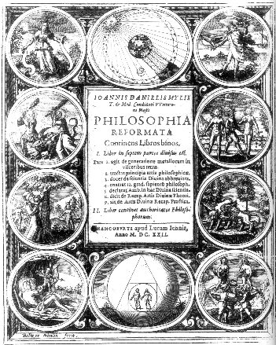
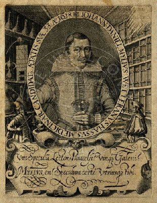
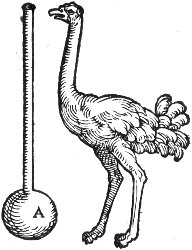
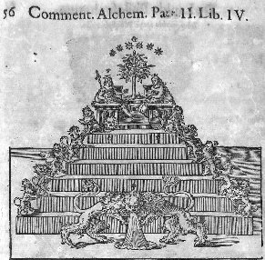
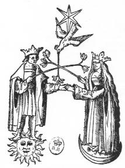
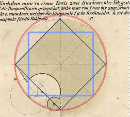
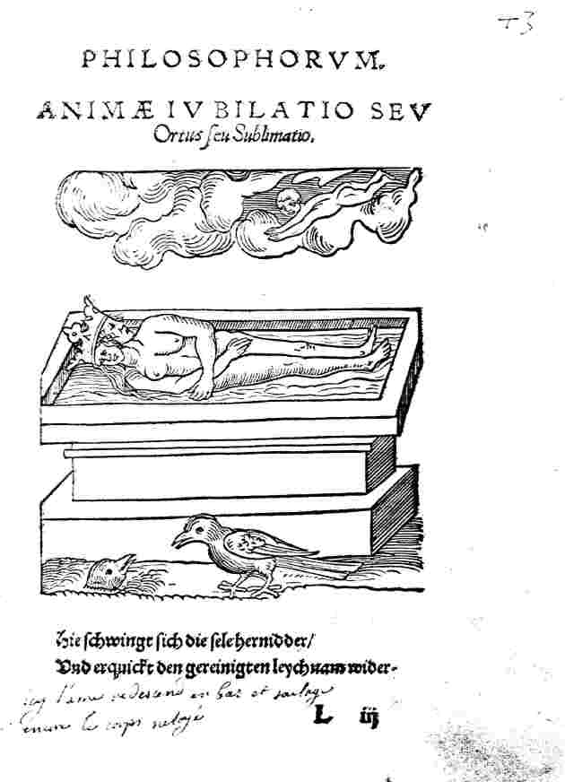
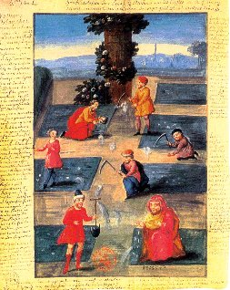
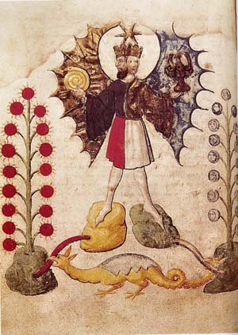
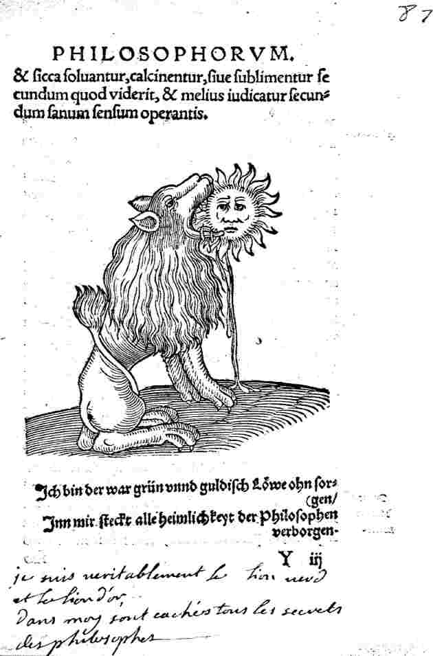

Philosophia reformata Johann Daniel Mylius
revu le 10 octobre 2006Introduction. Jean Daniel Mylius publia sa Philosophia reformata en 1622. Comme on le verra, ces gravures doivent beaucoup aux Douze Clefs attribuées à Basile Valentin, et selon, Adam Mc Lean, leur symbolisme se ressent aussi des Douze Portes de Ripley. Ces emblèmes ont été gravés par Balthazar ou Baltzer Schwan, citoyen de Francfort qui mourut en 1624. La Philosophia reformata est le chef d'oeuvre de Mylius et ses emblèmes furent remployés par Daniel Stolcius dans ses anthologies : Viridarium Chemicum [1624] et Chymisches Lustgärtlein [1627]. Cf. gravures.
Cette Philosophie réformée contient deux livres : le premier est divisé en sept parties. Le première partie traite de la génération des métaux dans les entrailles de la terre ; la deuxième partie expose les principes de l'Art philosophique ; la troisième partie enseigne un abrégé de la science divine ; la quatrième énumère les douze degrés de la sagesse des Philosophes. La cinquième énumère les points ambigus de la science divine. La sixième parle de la récapitulation pratique de l'art divin. Quant au second livre, il contient les autorités des Philosophes et a été publié à Francfort, chez Lucas Jennis en 1622.
Cette série se trouve dans l'édition allemande [Florilège de l'Art secret, Stanilsas Klossowski de Rola, Seuil, 1974] du Crede Mihi de Northon et dans le Viatorum Spagyricum de Jamsthaler. Les planches ci-dessous ont été reproduites, d'après l'exemplaire du British Museum, Londres, département des Imprimés. Elles se composent d'une première série de 28 gravures et d'une seconde série qui reproduit des éléments du Rosaire des Philosophes [anonyme]. Ces gravures et emblèmes permettent de dégager d'importants points de symbolisme dont l'un n'a encore été que peu étudié : le puits. E. Canseliet, dans ses Etudes de symbolisme alchimique, a parlé à trois reprises du puits :"Ces trois robes desquelles il dut changer, l'une après l'autre, à cause de ses trois chutes dans le fossé du puits à roue, alors qu'il [Frédéric Mistral] y voulait cueillir des jolies fleurs de glais, à savoir sa robe ordinaire, puis celle du dimanche, enfin, des jours de fête." [Alchimie, p. 150]
Or, que sont ces fleurs de glais, si ce n'est des fleurs de terre [marga = marne, terre]. Les Adeptes ne disent-ils pas qu'il faut savoir cultiver les perles rares [margarita] :
C'est dans ce sens que l'entend Tollius :
"Et pour vous rafraîchir un peu, je vous offre un vinaigre, mais du vinaigre distillé très aigre, avec vous pourrez (quand bon vous semblera) préparer la teinture du corail , c'est-à-dire l'acide ou le soufre fixe ; ou bien vous préparerez les perles, c'est-à-dire l'alcali et vous boirez pour vous fortifier du vin ou Esprit de Vin Antimonial." [le Chemin du ciel chymique]
Et cette perle, ce trésor, ne gît-il pas, comme il se doit, au fond d'un puits ? C'est ce que semblerait accréditer la gravure suivante, où l'on

FIGURE I
(frontispice de la Philosophia reformata.
Cliquez pour obtenir un agrandissement - taille de l'image : 388 Ko)voit le soleil, c'est-à-dire la lumière sortir de l'obscurité, l'occulte devenir manifeste [Lux obnubilata]. La figure I est un compendium de l'oeuvre. Si l'on part de la vignette en haut à gauche, en nous dirigeant à droite puis en bas, on observe d'abord une Reine avec deux phylactères en main [voir le mot phylactère en recherche] ; puis le soleil illuminant la terre et la lune, avec le cône d'ombre de la terre où l'on distingue une partie grisée et l'autre tout à fait obscure [voyez l'emblème XLV de l'Atalanta fugiens]. Il s'agit des différentes phases de l'oeuvre qui sont symbolisées par ce jeu de miroir céleste. Nous voyons ensuite le dieu Jupiter et ses aigles, rappelant l'emblème I de l'Atalanta fugiens de Maier. Nous observons ensuite le couple alchimique s'apprêtant à assommer le dragon écailleux qui figure le Mercure [rappelant la figure IV de l'Aurora consurgens et l'emblème XXV de l'Atalanta]. Puis, la phase de germination de la Pierre, rappelant la Clef VIII de Basile Valentin. Puis un vieillard, symbole du Mercurius senex, qui s'apprête à manger un fruit de l'arbre solaire : c'est le Mercurius senex qui dissout les chaux métalliques représentées par des fruits, probablement des pommes [assonance entre mhlon : pomme et mouton] ; au second plan, les enfants hermétiques [l'Arbore solari réapparaît à la dernière partie de la Philosophia reformata]. A droite, deux fauves dont l'un est ailé et l'autre aptère, sont identiques aux dragons que Nicolas Flamel a fait représenter au Cimetière des Innocents à Paris [Figures Hiéroglyphiques] mais l'image rappelle l'emblème XVI de l'Atalanta. En bas à gauche, la parturition hermétique, avec l'image de Cupidon où l'on peut voir aussi le Sagittaire [emblème XXIII de l'Atalanta qui annonce la anissance du Soufre solaire]. Au centre, des figures géométriques concentriques qui rappellent exactement l'emblème XXI. Enfin, en bas et à droite, une allégorie représentant le signe du Verseau, image de la fontaine de jouvence.
Il existe un rapport de cabale entre la perle, le dissolvant des Sages et ce que nous avons dit du IXe travail d'Hercule dans la section de Fontenay. La perle, margarithV, notre « marguerite » minérale, par sa racine, se rapproche de margoV qui signifie déréglé, fou, furieux qui définit l'état naturel du Mercure commun quand il n'est pas contrôlé. Au vrai, Ajax Le Grand est dans le même état quand il est pris de démence et décime un troupeau là où il croit tuer des soldats. Et d'où tirer notre marguerite, si ce n'est du puits ? Voyez l'explication de l'allégorie à l'emblème XVI. Disons ici que les rapports de proximité entre marga, margarita [margarithV] et le mot glais, employé par E. Canseliet, dans ce contexte précis, prennent tout leur sens et permettent de nommer deux des prima materia employées dans la préparation du dissolvant. Dans le Talisman de Marly-Le-Roi, E. Canseliet va plus loin dans le rapprochement avec le puits :"Grégoire de Tours [de Miraculis, lib. I, cap. I] et Haymon vont jusqu'à dire que l'étoile était tombée dans un puits à Bethléem et qu'on l'y voyait encore. A une heure de distance de Jérusalem est un puits qu'on appelle le puits de l'Etoile ou des Mages." [Les Evangiles apocryphes, Gustave Brunet, Paris, 1863]
Ce puits est parfaitement visible à la figure II et sur l'emblème XVI de Mylius, où un détail supplémentaire permet de donner le nom du Sel des Sages, encore qu'il s'agisse ici d'un nom caché : le Sel ne saurait être celui qu'il faut aller chercher dans une étable vulgaire, mais bien dans celle qui vit la naissance de Jésus, là précisément où :
"... l'étoile s'arrêta sur le faîte de la maison où était l'Enfant, puis sur sa tête..." [Ib.]
Si nous revoyons la figure I, on voit que la margelle du puits porte l'inscription : « source bénie d'eau vive ». Fulcanelli, dans le Mystère des Cathédrales, nous donne l'explication suivante :
"Disons enfin que la tradition ésotérique de la Fontaine de Vie ou Fontaine de Jouvence se retrouve matérialisée dans les Puits sacrés que possédaient au Moyen Âge, la plupart des églises gothiques. [...] De même l'eau du puits de Saint-Marcel, à Paris, creusé dans l'église, près de la pierre tombale du véénrable évêque, se révélait, d'après Grégoire de Tours, comme un puissant spécifique de plusieurs affections." [Myst., p. 98]
nous gagerions que Fulcanelli parle de notre Eau pontique dont est formée l'étoile des Mages, en forme de feu aqueux ou d'eau ignée.
Un mot encore : je dois à l'obligeance de M. Alain Mauranne des reproductions particulièrement soignées des emblèmes de Mylius. Le lecteur doit simplement cliquer sur chaque emblème indiqué en caractère gras et la planche apparaîtra dans une nouvelle feuille web.
Tous mes remerciements à Alain Mauranne.

Johann Daniel Mylius, 1620
I. Gravures reproduisant les allégories de l'Atalanta fugiens et des Douze Clefs de philosophie [de 1 à 28]
On voit deux grosses roches, sur lesquelles sont deux animaux : à gauche, une salamandre ; à droite un aigle qui est sur le point de s'envoler, dans un nid. Au centre, le symbole du monde, à tête de soleil, tient dans ses mains un enfant marqué du signe du Soufre. Ses pieds reposent dans un ruisseau. L'eau semble sourdre du bas des deux roches.
Cette gravure se rapproche, en substance, de l'emblème de Limojon de Saint-Didier. Ces roches sont les mêmes que les collines fleuries qui entourent le caducée d'Hermès. Ce sont les mêmes que l'on trouve au frontispice d'un autre ouvrage de Mylius, l'Anatomia Auri. Le
y est figuré par l'aigle [dont la fable fait le seul être vivant capable de fixer la lumière solaire] et la
est représentée par la salamandre qui symbolise le sel indestructible que les alchimistes appellent leur magnésie [assimilable à l'aimant des Sages ; Jung en traite dans Aïon au chapitre du poisson comparé à l'échéneis ou au rémora] L'homme, à tête de pleine lune, ceinturé du monde, estporteur de l'embryon hermétique. Les deux animaux permettent d'identifier les matières premières. La salamandre est la bête à feu, symbole d'un sel incombustible, infusible à la plus chaleur blanche. C'est donc d'un sel fixe qu'il est question, du principe Soufre. L'aigle indique une idée de sublimation et symbolise le principe mercuriel ; plus exactement et ainsi que nous venons de le dire, il faut y voir le Soufre solaire dissous dans le Mercure : ioV. C'est là l'un des grands secrets de l'alchimie en ce qu'il y réside la connexion entre le laboratoire et l'oratoire. Tout porte à croire que le ruisseau forme le Mercure ou Lait de Vierge qui contient les principes nutritifs pour la Pierre. En résumé : sel fixe - principe volatil - Mercure - petit monde des philosophes - Basileus de l'oeuvre. Reproduit dans Jung, p. 412 : « La terre, en tant que prima materia, nourrissant le fils des philosophes ». Il faudrait aussi citer le deuxième chapitre de l'Atalanta fugiens qui reproduit une gravure où l'on retrouve le globe. Mais il n'y a pas de roche. Elles sont remplacées d'un côté par une chèvre [Amalthée qui a nourri Jupiter] et de l'autre côté par une louve qui allaite.
Quatre Cariatides portant chacune un matras couronné d'où s'échappent des flammes. Une sphère supporte chaque déesse et présente le symbole d'un Elément. Successivement : la Terre
, l'Eau
, l'Air
et le Feu
. Un symbole est présent dans chaque matras. À la Terre correspond un personnage qu'on peut identifier comme un homme, c'est-à-dire comme un corps ; à l'Eau un animal mal visible qui semble tenir de la tortue et du batracien ; à l'Air, un phénix et au Feu, une tête de fauve qui doit être un Lion. La gravure nous présente les Quatre Eléments dont dépend toute la marche de l'oeuvre et on pourrait presque retrouver dans les figures thériomorphes les symboles du Tétramorphe, à ceci près que l'animal non identifié [Eau] devrait être un boeuf ou un taureau et que le phénix devrait être un aigle . Il ne faut pas y voir des signes ésotériques. Dans d'autres sections, on a vu que chaque Elément voile soit une substance chimique, bien définie, soit l'une des opérations de l'oeuvre. L'ordre de mise en place de ces symboles n'est pas indifférent. Ainsi, le Feu est-il placé à côté de l'Air, ce qui ne saurait nous étonner, puisque l'Air des Sages définit la sublimation du Soufre dans le Mercure. Qu'une tête de lion apparaisse en face de ce symbole est logique, puisqu'il s'agit du Lion vert [dissolvant des Sages ou Mercure en son premier état, par rapport au Lion rouge qui correspond au Mercure philosophique]. Qu'au Ciel corresponde le phénix, rien que de normal, puisque l'oiseau d'Hermès est le signe de la renaissance de la Terre, réincrudée en un Corps neuf, corporification de l'astérie des Sages [analogue de l'individuation de Jung]. Qu'à l'Eau corresponde un animal d'allure chimérique est conforme à la doctrine : c'est le Mercure commun [Mercure dans son premier état avant l'infusion des soufres]. Cette gravure est là en sorte de prolégomène et sert de générique à Mylius. Reproduit dans Jung, p. 300 : « Les quatre stades du processus alchimique. Les quatre éléments sont indiqués sur les sphères » [Psychologie et Alchimie, trad. Buchet Chastel, 1970].
Nettement plus complexe que les deux premières, cette gravure donne à voir un cercle dans lequel on distingue un serpent à trois têtes. Au-dessus, sont le Soufre [à tête de Soleil] et la Lune hermétique [tête de pleine Lune], analogues à l'emblème I. Des symboles sont annexés aux deux principes de la Pierre. Pour le Soufre, le prince et le corbeau ; pour la Lune hermétique [qui ne correspond pas exactement au principe Mercure], le cygne et le paon. Notez bien le décor environnant. À droite, vous verrez un tronc d'arbre qui a été scié et dont une branche est étreinte par une cordelette. Observez aussi la haute cheminée qui se profile dans le lointain et qui semble sortir de quelque fourneau. C'est ordinairement dans ce type de cheminée que l'on recueille la tutie. Que l'image du roitelet soit associée au Soufre rouge est normal. Examinons pourquoi l'image du corbeau y est aussi associée : le Soufre doit d'abord subir une dissolution radicale dans le Mercure ; c'est la phase de putréfaction qui correspond à la nigredo
ou sol niger. Le symbole de cette phase est par tradition le corbeau. Quant aux animaux de droite, annexés à la Lune, le cygne est l'hiéroglyphe du Mercure et le paon, l'animal consacré à Junon. Philalèthe écrit que :
"Et notre mercure philosophique est l'oiseau d'Hermès, à qui l'on donne aussi le nom d'Oie ou de Cygne, et quelquefois celui de Faysan."
Dans cette opération, on procède par la voie humide avec une matière que certains Philosophes ont appelé Lili [il s'agit du Mixte compost - premier Merure qui, selon le moment de l'oeuvre, est encore nommé airain, laiton, cuivre, aes, homme double igné, etc.]. Ils appellent ce Lili, lion rouge, qui à l'aide de la nature et de l'art, est promis à devenir aigle blanc. Ce Lion doit être trouvé en Orient [Lucifer
] et l'Aigle doit être trouvé au Midi [il s'agit du symbole de la sublimation ; la correspondance passe par le symbole de l'ioV
] ; Paracelse enseigne que les matériaux idoines seront trouvés en Hongrie. Lili doit, dûment préparé dans le pélican, passer par les couleurs dans l'ordre requis, c'est-à-dire devenir plus noir que le corbeau, puis, plus blanc que le cygne, puis, jaune, enfin, plus rouge que le sang, jusqu'à ce que Lili ait acquis les propriétés de la Salamandre [De la teinture des physiciens, chap. II, attribué à Paracelse]. C'est ce qu'indique l'emblème III. Le serpent, autre symbole du Mercure, exprime par sa forme l'idée de la circulation qui doit régner dans le pélican. Plus qu'un serpent d'ailleurs, nous avons affaire à l'hydre à trois têtes dont l'une seulement est immortelle selon ce qu'en disent les mythographes. On peut aussi y voir le symbole des trois principes de l'oeuvre [principes principiés : sulphur
- sal
- mercurius
]. Basile Valentin dit encore que le cygne rôti sera pour le Roi, manière d'exprimer l'emploi du Mercure pour l'oeuvre couronnée. Quant au paon, sa queue étoilée et constellée d'yeux, est à l'image des couleurs irisées qui apapraissent à la fin de la nigredo, lorsqu'arrive le régime de Jupiter [cf. Aurora consurgens II pour la relation aux « yeux de poissons » évoquée dans les textes, relevée par Jung dans ses Racines de la Conscience (trad. Buchet Chastel)]. Enfin, le pélican nourrit sa progéniture de sa substance même [voir la figure XXII de l'Aurora consurgens pour un exemple] ; il s'agit là de rien moins que la nature mercurielle même ou vase naturalis. Le contenant, en alchimie, a une importance aussi grande que le contenu. D'un côté, spiritus mundi ; de l'autre côté, anima mundi. Evoquons pour finir le mandala central où la lumière côtoie évidemment les ténèbres : sol niger, avec ce soleil et en surimpression, l'image du spiritus corruptus, l'hydre tricéphale. C'est bien à l'hydre que l'on peut assimiler ce serpent monstrueux : son sang - son âme - est un poison [ioV] dans lequel Héraklès trempait ses flèches : ne soyons donc pas étonnés de voir dans l'emblème suivant Cadmus visant la prima materia [l'inconscient de Jung] d'une flèche enduite de sang mortel [âme impure, assimilable à la chute de l'ange : cf. Aïon pour des développements que nous ne pouvons donner dans le cadre de ce travail. Que le lecteur sache que la Réponse à Job a suivi de peu celle de certains chapitres des plus importants d'Aïon, écrit en peu de temps au cours d'une maladie en 1953]. Ceci pour dire que nous rejoignons la quaternité au travers d'une apparente trinité et que le diabolus y est la figure centrale et comme le LA du diapason [harmonia mundi].
Griffon : liaison entre le lion et l'aigle, on nous le présente ici dans les entrailles de la terre. Il s'agit d'une indication sur un sel double, possédant une partie fixe et l'autre volatile. À gauche, l'Artiste est représenté à la poursuite de la matière et avec le 1er agent en main : c'est cet agent qui va assurer la séparation initiale. Le but de cette séparation est d'obtenir la matière première du Lion vert, ou Mercure commun, qui va permettre d'obtenir la purification et le blanchiment du « laiton », purification exprimée par le prêtre, à droite. Evidemment, les textes sont muets dès lors qu'il s'agit de mettre un nom vulgaire sous le griffon. Tout dépend aussi de la voie employée. Il semble que la voie humide soit davantage employée que la voie sèche, mais elle est aussi plus longue. La nature a choisi d'utiliser la voie humide [1, 2]. Nous tenons là l'image de la prima materia telle qu'elle apparaît dans son gîte minier. C'est ce spiritus corruptus qu'elle tient captif, partie la plus corrompue de la matière, mais tout autant, partie la plus malléable et susceptible d'amélioration. Van Lennep voit un dragon igné dans cette chimère : cette interprétation est possible. Elle conduit directement au dragon babylonien qui erre, de l'avis des Artistes, dans les montagnes et dans les vallées encaissées : c'est là que le V.I.T.R.I.O.L. des Sages sera trouvé. Tripied en a parlé savamment dans son Vitriol Philosophique. Cyliani fait de même :
« Avant de te quitter je veux encore t'observer que tu ne peux combattre le dragon qui défend intérieurement l'entrée de ce temple qu'avec cette lance qu'il faut que tu fasses rougir à l'aide du feu vulgaire afin de percer le corps du monstre que tu dois combattre, et pénétrer jusqu'à son coeur: dragon qui a été bien décrit par les anciens et duquel ils ont tant parlé. » [Hermès Dévoilé, ca. 1831]
Ce temple est l'un des piliers symboliques de l'oeuvre. Là encore, comme souvent, il prend un sens protéiforme que l'on retrouve dans les écrits des vieux alchimistes. En effet, le mot templum - dans sa première acception - est l'espace que la vue embrasse [voir Dupuis, Origine de tous les Cultes ou Religion universelle, Babeuf, 1822], c'est-à-dire le ciel étoilé où l'Artiste, de son bâton, trace la piste constellée de son
« L'oeil des adorateurs du ciel, du soleil et des astres, circonscrit dans l'étroite et obscure enceinte d'un temple, redemandait ses Dieux et regretait le spectacle brillant du premier temple de la Divinité, et du seul qui fût digne d'elle, celui de la Nature. » [Origine de tous les Cultes, etc. l. I, c. III, p. 108]
Comparez avec ce qu'écrit Bernard Le Trévisan et même Zosime, lorsqu'ils professent que « Nature se joint par nature; nature contient nature; nature s'éjouit en nature; nature amende nature; nature aime nature; nature surmonte nature; nature retient nature, etc. » façon d'affirmer haut et clair que l'on ne saurait outrepasser les bornes imposées par la nature ; concluez : la transmutation métallique est impossible. Certes, les physiciens du noyau savent pratiquer certaines formes de transmutation mais pour des quantités et surtout des types d'éléments qui n'ont rien à voir avec ceux que les vieux alchimistes avaient à l'esprit. Du temple, nous passons à l'enceinte [le zodiaque n'est, après tout, qu'un templum mundi que l'on désigne mieux comme un espace azuré, celui de l'agriculture céleste où l'instrument aratoire -
« Construis, mon ami, un temple monolithe, semblable à la céruse, à l'albâtre, un temple qui n'ait ni commencement ni fin, dans l'intérieur duquel se trouve une source de l'eau la plus pure, brillante comme le soleil. C'est l'épée à la main qu'il faut chercher à y pénétrer, car l'entrée est étroite. Elle est gardée par un dragon qu'on doit tuer et écorcher... » [Berthelot, Coll. des alchimistes grecs]
Nous sommes revenus plusieurs fois sur ce passage clef qui va rester intact, en substance, dans les siècles qui suivront. Ieron, Ion, tel est le nom du prêtre évoqué par Zosime. C'est la source, l'origine de la figure emblématique de l'évêque qui perdurera dans l'imagerie alchimique. Mais revenons un instant sur le temple monolithe : c'est l'assise de l'oeuvre, le fondement [idruma] qui rappelle singulièrement par homonymie l'idrwma [sueur] tant évoquée dans les textes et certains détails iconographiques.
Lambsprinck, De Lapide Philosophorum, Decimaquarta figura, Musaeum Hermeticum, p. 369
Par là est évoqué [idrwV] ce « travail pénible », cette « tâche difficile » dont parle Philalèthe dans l'Introïtus, VIII. Cette sueur sacrée n'est autre que l'humeur ou liqueur sécrétée par un arbre [chêne] ou une plante [salicornia] qui permettent de préparer l'alkali fixe. La sueur désigne également l'esprit du métal :
« Or les lampes ordinaires ont leur vaisseau de verre que l'on met dans une écuelle d'argile faite de cendre et de sable; ainsi cette lampe rend de soi une sueur parfois, dans laquelle sueur quelques-uns pensent que le métal reçoit son corps ou bien qu'un métal reçoit le corps d'un autre métal. Je laisse là cette transmutation à part et ne la puis louer. » [Basile Valentin, le Dernier Testament, cap. xlvii, du feu de lampe]
Basile Valentin entend parler ici de la dissolution ou liquéfaction de la cendre, prélude à la confection du Sel des philosophes :
« ARNAUD : Cette cendre manque de fusion : mais pour qu’elle entre afin de teindre, on lui rend assurément la liquéfaction ou sueur suivant le procédé transmis par les philosophes. Quel est donc ce procédé ? Est-ce la solution dans l’eau ? Non, à coup sûr, car les philosophes n’ont que faire des eaux qui adhèrent à ce qui les touche et des humidités de ce genre. » [Rosarium philosophorum, Du Sel des philosophes]
Une fois de plus, nous touchons au concept d'humide radical, c'est-à- dire non pas, comme l'affirme Arnaud à une « solution dans l'eau » qui est en somme l'équivalent de l'or en suspension [cf. voie humide] mais à une véritable dissolution aurique. L'une des acceptions de idrwV, sueur, est résine ou gomme : on est fondé à y trouver - par cabale - le Sel ou résine de l'or.
Atalanta XXVIII
L'emblème XXVIII de l'Atalanta fugiens montre un roi enclos dans un four à réverbère dans lequel est disposée une lampe à huile : n'est-ce pas là une indication superposable à ce que dit Basile dans son Dernier Testament ? Ainsi, le fondement de l'Art passe par la résolution de la materia prima, symbole du Roi et, avant tout, du Mercurius senex.
Cette figure présente de grandes analogies avec la Clef XII de Basile Valentin. Le tonneau [allusion au sel de tartre qui est l'un des composants du feu secret] est remplacé par un fourneau plus conventionnel ; on voit toujours le soleil et la lune ; le fait nouveau est la présence de l'appariteur, du médiateur salin [qui ressemble d'ailleurs au spiritus sanctus du De Lapide Philosophorum de Lambsprinck, cf. Musaeum Hermeticum]. Mais on pouvait remarquer son équivalent, qui est le symbole du Mercure, à la Clef XII, au-dessus du pot de fleur. Le pot à deux fleurs et à pointe se voit sur la table ; d'ailleurs ce pot évoque plutôt un petit creuset. Le lion, dont on devine qu'il dévore la queue d'un serpent, est identique dans les deux emblèmes. Les fleurs expriment le résultat à attendre de la coction à grand feu, ainsi qu'en témoigne la chaleur blanche dégagée par le fourneau. Les Philosophes Spagyriques, dit Pernety, se servent quelquefois indifféremment des termes de calcination, corruption, et putréfaction, pour signifier la même chose. Il y a encore une autre calcination proprement dite, et telle qu’on l’entend communément, qui est requise dans la préparation de la matiere : C’est une purification ou mondification de cette même matiere, que quelques-uns appellent rectification, d’autres ablution, d’autres séparation.
La gravure est tout à fait semblable à la Clef V de Basile Valentin. On y trouve pourtant des différences éloquentes. Le personnage de droite, dont on devine le caractère ardent, qui correspond au Mercure, n'est pas le même que celui de la Clef V, qui tient un soufflet à vent, signe de l'augmentation de température. On observe un gros récipient [singulièrement disposé chez Basile et que l'on prendrait volontiers pour un sac plein de vent] qui semble davantage rempli ici et dans lequel, manifestement, on recueille un produit distillé qui peut correspondre à l'opération de l'eau-forte. Le personnage féminin semble correspondre à Diane mais on ne voit pas les cornes lunaires qui ornaient sa tête chez Basile. En revanche, elle tient le même arbre à sept fleurs, qui correspond à l'arbre de vie, symbole des radicaux des sept métaux [cf. humide radical]. Il est probable que la fleur solitaire, en haut, représente l'or. Mais alors qu'un coeur, chez Basile, laisse aisément deviner sa nature soufrée, on ne voit ici qu'un simple pot ; c'est peut-être mieux vu parce qu'ainsi, il donne le nom vulgaire de la matière qui sert à préparer le vase de nature. Chez Basile, enfin, un tireur à l'arc, symbole d'Apollon, a disparu chez Mylius. Le lion est identique mais chez Mylius, il a perdu sa couronne. Par contre, il garde son symbole solaire, qui le signale comme le Lion rouge. En définitive, nous avons à droite la figuration de Saturne et à gauche, l'opération de la dissolution du Soufre, que le Lion s'apprête à dévorer, cf. emblème XVIII.
il se rapproche beaucoup de la Clef II de Basile, mais son appareil symbolique est simplifié. Trois personnages se font face. Ils n'ont pas l'attitude hostile qu'adoptent ceux de Basile. On reconnait au centre le Mercurius, avec le caducée aux double serpent. À ses pieds, des ailes gîsent, dont on ne sait si on les a coupées, ce que semblerait indiquer la légende « separatio ». Chez Basile, l'homme situé à la gauche porte une épée avec un serpent enroulé [le signe du vitriol] tandis que chez Mylius, c'est l'aspect du chevalier qu'il revêt [il s'agit d'Arès]. Quant au personnage de droite, c'est une femme [Vénus - Aphrodite] chez Mylius, qui porte un aigle tandis que chez Basile, c'est un homme qui porte un bourdon sur lequel est posé un oiseau. L'ensemble tient de l'allégorie du fixe et du volatil mais l'arcane est difficile à traduire en termes clairs. On dirait que deux principes affrontent le double Mercure [version des Douze Clefs] alors que chez Mylius, les acteurs de la pièce nous sont présentés, indifférents et amorphes [la scène est allégorique : on nous présente
et
Là encore, il est facile de rapprocher cette planche de la Clef VI de Basile. Les époux royaux [soleil et Lune] sont unis par le Mercure ou appariteur, qui est le personnage central ; chez Basile il apparaît comme un évêque. On remarque que cette « conjunctio » se réalise par mauvais temps. Voyez ce qu'on en dit dans la section Cosmopolite. À gauche, on remarque un fourneau où cuit l'homme double igné. Des récipients sont adaptés à la bouche de chaque tête, ce qui signale qu'une distillation doit être effectuée. Rapprochez cette vision des opérations qui sont réalisées à la planche 5 et 6 du Mutus Liber. A droite, on voit Neptune. Chez Basile, des détails supplémentaires insistent sur l'importance de recueillir le produit d'une distillation. Cette scène indique que la conjonction se réalise après la dissolution totale. Notez encore que chez Basile, il semble que l'on admette deux voies pour réaliser l'opération : à gauche, il s'agirait de la voie sèche ; à droite, de la voie humide. Mais cette particularité manque chez Mylius où seule la voie sèche est représentée. Enfin, il manque le pélican qui apparaît à gauche et en haut de la Clef VI [symbole mercuriel].
La gravure reproduit le squelette que Basile a fait peindre sur sa Clef IV. Mylius a enrichi les symboles : le squelette porte un corbeau et il repose sur un sol niger [nigredo], qui correspond à la grande éclipse de soleil et de lune de Lulle. Par la voie sèche, la « putrefactio » est beaucoup plus facile à comprendre que par la voie humide. Les Soufres se dissolvent dans le fondant qu'est le Mercure. Cette couleur noire s'adresse donc à l'entendement et non à la vue. Tel ne semble pas être le cas de la voie humide où les alchimistes nous assurent que la couleur noire est celle qui doit être vue en premier. Mais à quelle matière se rapporte-t-elle ? Dans quelle partie de l'oeuvre ? On sait que, dans la purification du salpêtre, une boue noire apparaît à la surface de la matière ; Est-ce la préparation du vinaigre distillé qui est ainsi masquée ? Ou bien encore la préparation de stannates ? Le squelette garde son secret ! Retenons l'allusion au corbeau, qu'on a vu lié au Soufre rouge sur l'emblème III. Il doit y avoir là une indication. Reproduit dans Jung, p. 117 : « Le noir (nigredo) debout sur le rond (rotundum), c'est-à-dire sur le soleil noir (sol niger) ». Remarquez à droite le tronc de l'arbre coupé et scié d'où émerge un nouveau rameau, signe de la future résurrection. Les anges représentent la rosée de mai.
C'est à une Tourbe que nous avons affaire. En haut, une sorte d'arc- en-ciel céleste où sont disposés les signes du zodiaque. Quatre matras sont disposés au-dessus et crachent des flammes. Sur la table, sont posées les distinctions qui signalent à l'Artiste les matières dont il aura besoin. De gauche à droite, on distingue un bélier, une écrevisse, une balance et ce qui doit être un capricorne mais ressemble étrangement à un lièvre [quaternité]. La légende indique « gradus » ce qui est en rapport avec le réglage de la température mais qui n'explique pas tout. Le capricorne, en grec aigokerwV, peut être décomposé en aix, chèvre, et kerwn, corne. Voyez d'un côté ce que nous avons dit sur le symbolisme de la licorne dans la section de Fontenay. De l'autre côté, voyez ce que nous avons dit touchant aux symboles zodiacaux et à l'Élément auquel chacun renvoie [prima materia - humide radical]. Vous observerez que les quatre signes zodiacaux disposés sur la table correspondent, selon notre système aux Quatre Éléments : au Bélier est associé le Feu ; à l'Écrevisse [Cancer], l'Air ; à la Balance, l'Eau et enfin, au Capricorne, la Terre. Notez aussi que l'Écrevisse [karkinoV] désigne aussi une pince pour saisir au feu... Le Bélier [exaltation du
] sont donc les signes du Mercure, en tant qu'ils associent
] et le Capricorne [exaltation de
Ici, nous voyons la préparation de la Grande coction. Le roi, désigné par sa couronne, représente le Mercure commun [Mercurius senex] qui, le moment venu, devra laisser place à plus jeune que lui, le dauphin ou fève hermétique : c'est son fils que l'on voit à sa droite. Au centre le symbole du médiateur [double Mercure]. À droite, Saturne s'affaire aux préparatifs de la coction. Notez qu'il s'agit de la voie humide. À l'extrème droite, l'Écrevisse. Cette trinité rappelle beaucoup le thème choisi par Lambsprinck dans le De Lapide Philosophorum. Quant à la congélation, c'est l'opération qui consiste à obtenir la liaison entre les deux Soufres via le Mercure. Elle ne diffère donc guère de la conjonction, à cela près qu'elle fait intervenir le Mercure. De Cyrano Bergerac a sans doute développé dans son Histoire comique, contenant les Estats et empires du soleil (Paris, Charles de Sercy, 1662 ; titre repris dans la collection Bouquins) la meilleure allégorie sur la question de la congélation. Notons un détail de pratique chimique : le matras à long col évoque l'autruche, selon une gravure d'un ouvrage de Porta.

G. Della Porta, De distillationibus, Rome, 1608
L'autruche est un symbole classique de justice, rappelant Thémis et sa Balance. Revoyez l'emblème X. L'estomac de Saturne est encore appelé estomac de l'autruche et l'on trouve une référence particulièrement remarquable dans l'emblème VII de l'Atalanta fugiens, avec une allusion à l'Aurore [il s'agit probablement de l'Aurora consurgens. En effet, Maier cite immédiatement après Senior dont le texte figure dans le même recueil : Artis Auriferae, etc. Cf. Aurora consurgens, I] :
« J’ai contemplé un oiseau vénéré des Sages, qui vole, tandis qu’il est dans le Bélier, le Cancer, la Balance et le Capricorne ; et tu en feras l’acquisition pour toujours à partir des vraies minières et des montagnes pierreuses. »
Nous voici ramenés à l'emblème X... L'autruche désigne aussi, ce qui est plus approprié dans notre contexte, le corps purifié [Paracelse, cité in Huginus à Barma] dont l'Artiste a besoin pour féconder sa terre.
« Après que la main de l'habile Artiste aura ainsi purifié chacun de ces deux principes, prenez-les chacun à part, & disposez-les à la propagation de leur espèce. Pour cet effet, dissolvez heureusement le mâle dans l'estomac de l'Autruche
[ strouqo-kameloV : autruche, mais par assonance phonétique, herbe à foulon, coing et coq ; la portée hermétique de l'autruche permet, ici, de faire référence à la terre à foulon, c'est-à-dire à la creta fullona ] naissante en terre, fortifié par la vertu âcre & pénétrante de l'Aigle, & lorsque la solution lui aura fait rendre ses fleurs, n'oubliez pas de le délivrer de l'acrimonie qu'il a contractée dans sa jonction avec l'Aigle, & des impuretés qu'il contient... » [chap. XXIX]Il est bien sûr question de la préparation du sulphur
La forme de l'emblème [l'Eau] rappelle la Clef X de Basile. La légende « cibatio », indique que le temps de la nourriture est venue. Nous avons franchi le régime de Jupiter. Nous voyons en bas la Vierge en situation de Virga paritura, de Vierge-mère et Vierge-Terre [cette Vierge rappelle l'une des gravures du Symbola Aurae Mensae de Maier]. L'opération par laquelle on nourrit l'embryon hermétique est indiquée par le tournoiement du dragon. Cette opération, qui résume la sublimation philosophique, doit être réitérée trois fois, comme l'indique le nombre des aigles royaux. Vous noterez l'aspect chimérique du Mercure dont une partie est manifestement fixe, l'autre étant volatile. Voyez l'article Aigle du dictionnaire de Pernety dans la section Matière. Voyez en quoi la sublimation [uyeloV] se rapproche de l'élévation et vous aurez la clef du Mercure commun : sa haute condition pourrait faire évoquer quelque Fable de la Fontaine... Un dernier mot : sublimation et conjonction forment, avec la dissolution, une trinité. Sur la cibatio, cf. 1, 2, 3, 4, 5, 6, 7.
Cette figure est identique à la Clef I de Basile. Même creuset à gauche ; même loup ; l'image de Saturne est mieux définie. Les trois symboles disposés à droite de l'athanor se comprennent aisément : l'étoile désigne le même symbole que celui dont on a parlé dans le commentaire du Mutus Liber. les symboles lunaire et solaire se passent d'explication et l'exotérisme est ici plus accusé que la simple plante à trois fleurs que tient le principe féminin chez Basile [d'ailleurs cette plante est toujours présente, à la droite de l'athanor : les fleurs y sont remplacées par l'étoile, le soleil et la lune]. Ce qui est nouveau chez Mylius, c'est l'arbre de vie [voir Fontenay] où l'on ne voit que cinq représentants du principe Soufre, « l'Or et l'Argent » philosophiques sont désignés sur l'arbrisseau situé près de l'athanor. Le couple alchimique présente des nouveautés par rapport à la version de Basile. Le Roi porte le phénix de sa main droite [cf. poème du phénix] et le bourdon de sa main gauche. La Reine porte l'attribut mercuriel : un cygne [kuknoV] ; notez qu'un aigle blanc se dit kukniaV et que ces deux oiseaux sont, par cabale, des cousins proches. Considérez aussi que KuknoV, fils de Poséidon, est tué au combat par Achille, l'Achéen céleste. Et que l'on connait un autre KuknoV, fils d'Arès, tué au combat par notre Artiste, Hercule. Dans les deux cas, c'est du principe mercuriel qu'il s'agit. La légende « sublimatio » évoque la conjonction des principes. Mais nous ne dirons plus, comme indiqué par erreur au commentaire de Basile, qu'il s'agit de la préparation de la stibine. il faut ici user de cabale et mettre d'un côté de la balance, lukoV [le loup] et de l'autre, la lumière [lukh]. N'oublions pas que la chèvre de M. Seguin résista au loup jusqu'au point du jour [Aurora consurgens], amjiluke ou lukojwV. Considérez aussi pourquoi le tueur de loup [luko-jouthV] était l'autre nom du Troyen et vous aurez avancé dans la connaissance de notre materia prima. Méditez aussi ces paroles de Basile :
"Si donc tu veux opérer en nos matières, prends un loup affamé et ravissant, sujet à cause de l'étymologie de son nom au guerrier Mars, mais de race tenant de Saturne, comme étant son fils." [Douze Clefs]
Ce loup ravissant est en rapport avec la lumière lukh, et l'aurore. il contracte un rapport de cabale avec Mars par arhV, à cause de sa proximité à arhn, qui désigne l'agneau, le mouton. Or, c'est bien connu, le loup est l'ami de l'agneau... Reproduit dans Jung, p. 469 : « L'aigle et le cygne, symboles du spiritus sublimé. Au premier plan, Saturne » [Psychologie et alchimie, op. cit.]. Il est malaisé de savoir si l'artiste a dessiné un aigle ou un phénix...
Très proche de la Clef VIII de Basile, la gravure montre les corps morts du soleil et de la lune. L'ange, à droite, sonne de la trompette à l'instar de ceux qui ornent le frontispice du Mutus Liber, prêts à animer le Mercure endormi. C'est la même image. Voyez une autre version de l'ange au commentaire du Triomphe hermétique de Limojon. A droite, Saturne, pris dans son acception primitive, dieu grégaire, sème l'Or. La légende, « Fermentatio » résume bien cette planche, simplifiée par rapport à la Clef de Basile.
C'est le couple alchimique en gloire que montre Mylius. Au bas de l'escalier, les deux lions à une tête désignent le Lion rouge et expriment le sens de la légende « Exaltatio ». On peut rapprocher de cette planche la quinzième figure du De Lapide Philosophorum de Lambsprinck. L'appariteur est remplacé par l'arbre aux luminaires que l'on aperçoit entre nos deux principes. L'exaltation est cette opération de l'animation du Mercure qui le transforme en Mercure philosophique qui contient le Rebis, en voie de réincrudation. On trouve dans l'Alchymia de Libavius une gravure qui ressemble beaucoup à cet emblème.

Alchymia, Commentarium, deuxième partie, p. 56, Francoforti, 1606 [cliquez pour agrandir]
Ce lion monocéphale (A) est le symbole de la materia prima ou minière de la pierre des philoosphes ; on l'obtient du double mercure et la tête du lion vomit de l'eau verte : vocatur alias Leo viridis. En haut de la pyramide des philosophes [où l'on aura reconnu l'étoile de Salomon
si l'on veut bien voir qu'elle a six paliers], trône le couple royal ; au faîte, l'Arbor vitae ou arbor solari dont on peut cueillir les pommes d'or [mhlon] après qu'elles auront crû et multiplié.
Cette figure fait l'objet d'un jeu de mots qui est masqué par le puits que l'on devine à droite et d'où l'on tire de l'eau. Ce puits, jrear, pourrait être en effet ici, un objet de perplexité. Mais si l'on prend garde que tirer de l'eau hors d'un puits s'énonce jre-antlhV, jeu de mot sur KleanqhV, on peut dire ceci : anqoV désigne les efflorescences salines, et tout spécialement le sel nitre. De là à penser que notre sel [anqoV] est de ceux qui ouvrent [kleiV] les prisons où gît le Soufre des métaux, il n'y a qu'un pas... Diane apparaît chevauchant un Lion qui allaite ses petits. Elle tient un globe où l'on aperçoit le pélican, autre emblème du Mercure puisque cet animal offre ses propres plumes à sa progéniture et donne, en outre l'idée d'une circulation dans le récipient qui porte son nom. Mais le pélican, pelekan, est aussi proche de pelekaw, qui signifie travailler avec la hache. Or, la hache [voir figure XXV de l'Aurora consurgens] est l'un des symboles les plus réservés de l'oeuvre, de celui dont on use pour foudroyer avec de l'eau, ce qui, en terme hermétique, s'appelle fertiliser. La hache, instrument qu'on appelle encore pierre de foudre, est aussi celui avec lequel on ouvre la Terre : elle figure alors son union avec le Ciel en exprimant exactement ce que dit Basile : « romps l'écorce et prend le noyau » [qu'on traduit improprement par « brûle tes livres...»] par une confusion sur libros. Bref, c'est un symbole qui fend l'écorce de l'arbre et un symbole de pénétration spirituelle qui a des points communs avec le Sagittaire. Mais c'est aussi un instrument de délivrance. En somme, la multiplication [multiplex], l'accroissement, va aboutir à l'accrétion des Soufres, à l'arrivée sur la terre promise, Délos, là où Latone accouche d'Apollon et d'Artémis, ses enfants pétrés.
Le soufre et le mercure sont représentés de part et d'autre d'une nymphe où l'on verrait volontiers Aphrodite sortant des eaux, ce d'autant plus que les trois personnages semblent marcher sur l'eau. Au-dessus de la nymphe [ou de la déesse], on voit cinq étoiles qui désignent sans doute les cinq métaux vulgaires, l'or et l'argent étant hors d'oeuvre. Aux coins de la gravure, les vents de l'oeuvre [voir Atalanta fugiens]. Un mot sur l'aspect de la surface de l'eau : il s'agit de toute évidence d'une eau qui n'a pas la consistence de « l'eau vulgaire » ; c'est d'une eau salée qu'il s'agit, l'aqua permanens.
Les sept métaux sont représentés dans les cavernes de la terre et chacun se voit affublé d'un symbole. On reconnait très bien au premier plan, la lune et l'Écrevisse, au centre le Soleil jouant de la lyre [Orphée, avec allusion à Apollon] et derrière lui le lion. À droite, une nymphe tenant une flèche. L'animal placé derrière semble être une chèvre, emblème du Mercure ; il est possible que le signe des Gémeaux soit ici indiqué. Au second plan, on reconnait au centre Saturne et le capricorne ; à droite, les Poissons et le dauphin. À gauche, Arès et le bélier. À l'extrême gauche, un personnage couronné avec un symbole difficile à déchiffrer. Il semble s'agir d'un tireur à l'arc. Si l'on procède par élimination, on trouve la liste suivante :
- Bélier = fer - Cancer = argent - Lion = or - Gémeaux = mercure [à prendre pour argent-vif et non pour vif-argent] - Capricorne = plomb - Sagittaire = étain. Restent à caser le cuivre et l'antimoine. Mais cela fait huit. Si l'on exclut l'antimoine, des parties de Saturne, il ne reste plus que le cuivre. Le cuivre renvoie soit à la Balance, soit au Taureau [Vénus]. Il est possible que l'animal placé derrière la nymphe soit non pas un capridé mais un bovin. Pourquoi a-t-il une tête atypique ? On trouve une gravure qui se rapproche un peu de celle-ci dans le Musaeum Hermeticum [Francfort, 1627], que nous reproduisons ci-dessous. Le symbolisme de la
gravure est très clair. Au premier plan, le puits, dont nous connaissons à présent la signification ; au second plan, dans une caverne de la Terre, les septs représentants métalliques ; au-dessus, les symboles du Feu, de l'Eau et, au centre, de la Pierre. À gauche, en haut, la salamandre qui indique la nature du sel fixe, incombustible dont nous avons parlé déjà tant de fois... À droite, les vents cardinaux de l'Oeuvre, Borée, Zéphyre et Aquilon. La Pierre philosophale n'est-elle pas, d'ailleurs, la Rose des vents ? Et le vent, par son inconstance, sa vanité, ne traduit-il pas les caractères de notre Mercure volage ? L'emblème XVIII est reproduit dans Jung, p. 89 : « les sept dieux des planètes en enfer » [Psychologie et Alchimie]. Il est possible que le cuivre n'est pas éét représenté, car il s'agit de l'aes, symbole du laiton ou de l'airain, auquel cas il renvoie à l'hermaphrodite.
La gravure nous montre une image spirituelle de la Pierre philosophale. Le dessin du cercle, inscrit dans un carré, lui-même inscrit dans un triangle donne des indications sur les trois stades de l'oeuvre, les trois principes et les Quatre Eléments. Voyez ce que nous en disons dans les Douze Portes de Ripley. Retenons ici que la pierre est triangulaire dans sa forme, quadrangulaire dans son état et circulaire dans son origine. Par triangulaire, nous voulons dire, de vertu triangulaire, car des triangles peuvent s'associer pour former des hexaèdres, des icosaèdres, etc. Elle trouve son origine dans le Mercure, dont le symbole est un serpent qui se mord la queue ou d'une surface circulaire [ellipse, tronc de cône, cercle] ; son état s'équilibre par l'effet conjugué, à la fois synergique et successif, de l'application contrôlée et pesée des Quatre Eléments : le travail commence par la Terre, se poursuit par l'Eau, se déplace dans l'Air des Sages sous l'influence du Feu élémentaire puis finit dans la Terre, réincrudée et ennoblie. Cette figure a été traitée par Michel Maier dans son Atalanta fugiens, emblème XXI. Il s'agit de l'imago mundi qui décrit l'anima consurgens. Une image semblable peut être retrouvée dans l'arbre du Mercurius Redivivus, cf. Aurora consurgens, I. Notez encore l'ombre [umbra] portée du globe sur le
« Au cours du traitement psychologique, la relation dialectique achemine logiquement le patient vers une confrontation avec son ombre, cette moitié obscure de l'âme dont on s'est depuis toujours débarassé au moyen de projections... » [Psychologie et alchimie, §36, p. 42]
Il est aisé de transcrire ces paroles dans l'Art sacré : le côté obscur de l'âme représente ce spiritus corruptus qui est évoqué dans l'une des gravures du Rosarium philosophorum [voir Aurora consurgens II] : c'est cette dissolution initiale ou sol niger qui signale à l'Artiste qu'il est, au début de son travail, sur le bon chemin. Quant à la projection, suffisamment de contre-sens ont été formulés pour qu'il soit utile de revenir une dernière fois là-dessus : les alchimistes ont raconté, depuis l'époque médiévale, qu'ils réalisaient la transmutation métallique grâce à leur poudre de projection. Ils ennoblissent les métaux vils en argent ou en or. Naturellement, on comprendra que cette métamorphose ne peut se comprendre que par l'esprit : Jung a étudié de façon approfondie ces arcanes à partir de 1930 pour ne plus ensuite se séparer vraiment de la littérature alchimique, dont il avait une connaissance extraordinaire, aidé d'ailleurs en cela par Marie Louise von Franz. Cette projection est tout intérieure et correspond, idéalement, au phénomène d'individuation par lequel le MOI aquiert son élongation maximale vis-à-vis du SOI, son aphélie en quelque sorte. De là, les transitions alchimiques de l'obscurité à la lumière, il n'y a qu'un pas facile à franchir. Mais c'est sans doute à Herbert Silberer que nous devons d'avoir posé les fondements de cette pierre monolithe sur laquelle Jung s'est appuyée pour bâtir son propre temple [Bollingen].
L'appariteur, médiateur du Soufre et du Mercure, sanctifie, oint, l'union sacrée des deux natures, sous l'effet du Feu. Voilà encore un symbole du spiritus sanctus qui rappelle celui du traité de Lambsprinck. cf. emblème VIII.
Une nymphe effrayée par un animal monstrueux, dont le mufle présente quelques traits de ressemblance avec le Mercure de l'emblème XII. À gauche, le médiateur. S'agirait-il d'une allégorie concernant la fable de Latone poursuivie par Typhon ?
Les laveures de Nicolas Flamel. La phase de « nigredo » est achevée. Le Rebis doit être lavé avec la lessive ou le savon des philosophes. Le Rebis passe par plusieurs phases dans son développement : c'est d'abord l'Airain avant qu'il ne devienne le laiton, termes que les Latins ont désigné par le mot aes. L'opération consiste à nettoyer l'aes ustum [airain brûlé, cf. Berthelot, Chimie des Anciens, VII]. Ces laveures nécessitent un savon spécial qui est le dissolvant universel dont Kunckel niait l'existence [cf. Fulcanelli, DM, II]. On trouve semblable image dans le Splendor solis, figure XX.
vingtième image de la Toyson d'or, de Salomon Trismosin, Andre le Sage [cliquez pour une autre version en couleurs]
Voici un extrait de la Toyson d'or de Salomon Trismosin (pseudo) qui en dit long sur ce sujet des laveures :
Au quatrième la chaleur purifie chassant de son foyer le moindre objet de quelque impureté. Calid, à ce sujet, dit qu'il faut laver la matière par un feu chaud, pour faire une apparente mutation : aussi faut-il savoir que les minéraux assortis et alliés ensemble déchoient promptement de leurs premières habitudes par la communication réciproque de chacune de leur propre influence en l'infusion également dispersée par la totale masse de leur communauté, se dépouillant d'un vêtement particulier pour en faire puis après une proportion égale et mesurée à tout le gros de la minière, et quittant les mauvaises senteurs de leur infection par le moyen de notre Elixir renouvelé, duquel traite fort à propos Hermès, quand il dit qu'il est très nécessaire de séparer le gros du subtil, la terre du feu et le rare de l'épais. Il me vient à propos de rapporter ici les conceptions du traité d'Alphidius qui ne contredit en rien ce que nous en disons. Vous connaîtrez, par la lecture exacte de ses doctes écrits, le même avis qu'il en a du tout, semblable à tant de bons et renommés auteurs, qui nous ont tous laissés hésitants au même chemin.
QUEL EST LE PROPRE DE LA NATURE PAR LEQUEL ELLE PREND SON OPÉRATION traité quatrième
Il s'agit d'éliminer les parties adustibles en conservant le Sel fixe central qui est la magnésie des philosophes, autrement nommée SEL [il ne s'agit pas du Salniterde Jacob Boehme, cf. Aurora consurgens II]. Toutefois, ces parties solubles dans le feu ont une grande importance, quand on sait que les alchimistes, dans ce métier de tissage que constitue leur Mercure, y trouvent les fils de leur Or qui est le vrai
Combat du Lion vert, fixe, et du Lion rouge de caractère plus volatil. Rappelons que le Lion vert est le Mercure commun qui porte en lui une partie de l'Esprit du Mercure et le Sel ou Corps de la Pierre. Le lion vert se transforme en lion rouge lorsque le Soufre rouge s'y est sublimé, ce qui explique les ailes. Notez au pied du lion rouge un écu, signe du Soufre solaire. Au loin et à droite, un navire qui ressemble au bâteau Argo, allusion à la combinaison de
Cette scène, évoquant la putréfaction, rappelle l'emblème XIII. Notez la présence, à gauche, du tronc de chêne mort, d'où émerge un bourgeon. La reine porte un rameau, signe de la régénération et de la multplication tandis que le roi porte le bourdon qui équivaut à la flèche [sulphur
L'Artiste, las, se demande bien comment il fera pour faire communiquer les deux extrémités du vaisseau de nature. Peut-être la solution se trouve-t-elle sous son pied gauche [pierre cubique] ; peut-être se trouve-t-elle au loin, sur le bateau Argos ? Notez le bloc de pierre sur lequel il s'adosse : il n'est pas étranger à notre propos d'y voir du marbre veiné. Enfin, le vase où l'on retrouve l'idéogramme
: aes ustum [airain brûlé]. L'allégorie est claire : les oiseaux sont Gabricius et Beja. Au centre, il existe une terre ou plutôt un résidu [faeces, trux] qui empêche aux extrémités du vaisseau de nature de se conjuguer. Cet excès de terre doit être enlevé par de la pierre calcaire. Voyez ailleurs ce que nous disons du foie de soufre terreux : vous y trouverez, non loin, l'udor qeion de Zosime : c'est l'eau qui permet de laver le laiton et qui dissout entièrement l'Or alchimique [cf. Livre de Crates et Berthelot, Chimie des Anciens]. Jean Baptiste Porta se faisait encore l'écho de ce que l'on pouvait augmenter le poids de l'or par l'emploi combiné du mercure et de la calca viva [Magiae naturalis, Lugduni, 1644].
À gauche, le Mercure, avec son caducée qui est aussi une image des Gémeaux. Au centre, l'athanor avec trois matras au long col qui signalent peut-être les trois sublimations qu'il faut, par tradition, pratiquer. À droite, le Lion vert. Nous sommes au début de la Grande coction. Selon Van Lennep [Alchimie, p. 209], les matras indiqueraient que la partie fixe doit être trois fois plus importante que la partie volatile. Or, nous savons qu'il n'en est rien : tout au contraire, c'est d'une trace seulement de Soufre [teinture] que l'Artiste a besoin pour projeter, en masse, sur son Sel.
Image de la moisson. À droite, la Vierge allaitant l'enfant hermétique. À gauche, Arès. Ce symbole est-il une indication sur la nature du Soufre rouge ? Notez la pierre cubique, en bas, identique à celle de l'emblème XXV. Les enfants de part et d'autre représentent les principes de l'oeuvre [
Cette gravure ne semble pas posséder de caractère hermétique. On y voit une reine donnant à trois sujets leur obole. Est-ce une indication sur le poids de nature ? Ne serait-ce pas plutôt une indication sur le tiers d'une obole, puisqu'on aperçoit trois sujets ? Si l'on se reporte à la Chimie des Anciens de Berthelot, on remarque que le terme keration signifie carat, tiers d'obole. Ce mot a encore pour acception la corne et peut désigner les extrémités recourbées de la matrice. On peut dès lors se poser la question de savoir si cet emblème ne dissimulerait pas une allégorie sur le Taureau... Si nous relisons à présent le chapitre que Jung consacre à la Licorne dans l'allégorique ecclésiastique, nous trouvons :
« C'est sur ces métaphores que Tertullien base son allusion au Christ : Sa beauté est d'un taureau, et ses cornes des cornes de licorne (Liber adversus Judaeos in Jacques Paul Migne, Dictionnaire des sciences occultes, Paris, 1846-1848, Patrologiae cursus completus, Series latina, chap. X) ... Ainsi, dit Tertullien, le Christ fut nommé le taureau à cause de deux qualités : il est d'une part dur ... comme un juge, et d'autre part bienveillant ... comme un sauveur. » [Psychologie et Alchimie, § 520- 521, trad. Buchet Chastel, pp. 552-553]
Sur la parabole de la drachme perdue, cf. Douze Clefs de philosophie. Le lecteur appréciera de savoir si Mylius n'a pas voulu terminer ce premier volet de sa triade avec - par cabale - le mot AMEN.
II. Gravures reproduisant les allégories du Rosarium Philoosphorum [de 1 à 20]
Nous allons à présent aborder la série des gravures où Mylius a reproduit les allégories du Rosaire des Philosophes. Dans son Alchimie, Van Lennep précise que Mylius a dû aussi s'inspirer du traité de Janus Lacinius, Pretiosa Margarita, publié en 1546.
V.I.T.R.I.O.L.U.M. : : Visitare Interiora Terrae Rectificando Invenies Occultum Lapidem. Ce qui signifie : « Explore le tréfonds de la Terre ; en purifiant tu trouveras la Pierre cachée ». Voilà qu'elle doit être l'étrange occupation des mineurs qu'on aperçoit, affairés autour de trois cuviers et qui scrutent l'intérieur d'un vase, à la recherche de quelque or, peut-être. Mais on n'a pas pris garde que cette acronyme n'était qu'une allégorie du travail hermétique. Il ne faut pas que l'étudiant s'imagine que c'est en explorant des cavernes qu'il trouvera ce qu'il cherche. Non. C'est à la fois plus simple et plus astucieux. Il doit d'abord séparer la substance qui constitue la Terre, puis, en purifiant la dissolution, il trouvera l'arcanum, c'est-à-dire la pierre cachée. Quoi qu'il en soit, cette emblème se rapproche du n° LX de l'Atalanta fugiens. Toutefois, l'obélisque a été enlevée et remplacée par une autre fontaine ; de même la maison de verre a disparu. C'est dommage car l'obélisque avait la valeur du Soufre solaire ou
Quant aux pyramides et aux obélisques, rien de plus connu que la raison qui les fit consacrer dans la religion égyptienne, et que le rapport qui les lie à la Nature. C'est même comme monuments religieux qu'ils ont existé en Égypte en aussi grand nombre ; et c'est la superstition seule qui les y a si fort multipliés ; car tel est le sort de notre triste humanité, de n'élever presque jamais de grands monuments, que pour perpétuer ou des malheurs ou des sottises, tels que des combats ou des erreurs religieuses. Pline, dans son Histoire naturelle (l. 36, c. 8 et 11), s'explique de la façon la plus claire sur le choix qu'on fit de l'obélisque et de la pyramide, de préférence aux autres figures qu'on eût pu donner aux colonnes sacrées élevées au Soleil, « C'était autant de monuments, dit Pline, consacrés à la divinité du Soleil. Leur figure même est une image des rayons de cet astre, et le nom qu'elles portent a cette signification en égyptien, Le savant Jablonski retrouve cette étymologie encore dans la langue cophte. Il observe (Panth. Aegypt. prolog., p. 82) que le mot (pirh) Pyré, qui entre dans la composition du nom de la pyramide, est encore aujourd'hui celui du Soleil en langue cophte, ou dans l'ancienne langue égyptienne dont les Cophtes ont conservé les restes. Pyr est aussi le nom du feu chez les Grecs (Isidore, Orig., l. 3, c. 3, de Geom); le feu et le Soleil ont une analogie trop naturelle entre eux, pour que les noms du Soleil et du feu n'aient pas eu quelque ressemblance chez deux peuples, dont l'un était en partie une colonie de l'autre. Jablonski trouve l'autre partie du mot pyramide dans muë, qui, dans la même langue, signifie éclat et rayon. Quoi qu'il en soit de l'étymologie, il est certain que la pyramide, comme l'obélisque, était consacrée au Dieu soleil, d'après des raisons d'analogie entre la figure pyramidale et celle sous laquelle le rayon solaire se propage et la flamme s'élève.
Origine de tous les Cultes ou Religion universelle, Paris, Babeuf, 1822
Plus conventionnelle à l'art hermétique, cette allégorie concerne la transformation du Mercure commun en double Mercure, où, si l'on préfère, la mutation du lion vert en lion rouge. On peut noter que cette gravure a de grandes similitudes avec celle du Rosaire où l'on aperçoit le roi et la reine à la première phase de la conjonction. Elle n'est pas non plus sans rappeler l'emblème XIII et surtout XXIV du premier volet. Mais dans le premier cas, l'athanor est remplacé par le Lion double ; et dans le second, les deux corbeaux sont emplacés par la figure de l'aigle. Remarquez à droite la forêt d'où provient la Reine [le Sel caché dans la materia prima] qui contraste avec l'arbre bourgeonnant près du Roi [le Soufre est singulier, disent les textes, mais le mercure est pluriel].

FIGURE III
Rosaire des Philosophes : première phase de conjonction
Le soleil et la lune sont remplacés par les lions et la colombe, par l'aigle. Ce sera l'occasion de commenter ici ce que dit Pernety du Lion : "
Lion. Les Philosophes Chymistes emploient souvent ce terme dans leurs ouvrages, pour signifier une des matières qui entrent dans la composition du magistere. En général c’est ce qu’ils appellent leur Mâle ou leur Soleil, tant avant qu’après la confection de leur mercure animé. Avant la confection, c’est la partie fixe, ou matière capable de résister à l’action du feu. Après la confection, c’est encore la matière fixe qu’il faut employer, mais plus parfaite qu’elle n’était avant Au commencement c’était le Lion vert, elle devient Lion rouge par la préparation. C’est avec le premier qu’on fait le mercure, et avec le second qu’on fait la pierre ou l’élixir. Lorsqu’on trouve dans les écrits des Philosophes le terme de Lion employé sans addition, il signifie le soufre des Sages, soit blanc, qu’ils appellent aussi Or blanc, soit rouge, qu’ils nomment simplement Or. Quelquefois ils donnent le nom de Lion à la poudre de projection, parce qu’elle est or parfait, plus pur que l’or même des mines, et qu’elle transforme les métaux imparfaits en sa propre substance, c’est-à-dire en or, comme le Lion dévore les autres animaux, et les tourne en sa substance, parce qu’il s’en nourrit. Lorsqu’ils se servent du terme de Lion pour signifier leur mercure, ils y ajoutent l’épithète qualificative de vert, pour le distinguer du mercure digéré et fait soufre. C'est dans ce sens qu’il faut entendre ces expressions de Morien : " Prenez la fumée blanche, et le Lion vert, et l’Almagra rouge,et l’immondice." Le même Auteur, quelques pages après, explique ce qu’il entend par Lion Vert .
LION. (le vieil) Partie fixe de la pierre, appelée vieille, parce qu’elle est le principe de tout.
Lion VERT. (SC. Herm.) Matiere que les Philosophes Chymiques emploient pour faire le magistere des Sages; cette matière est certainement minérale, et prise du règne minéral. Elle est la base de tous les menstrues dont les Philosophes ont parlé. C’est de cette matière qu’ils ont composé leur dissolvant universel, qu’ils ont ensuite acué avec les essences des végétaux, pour faire le menstrue végétal; avec les essences des animaux, pour le menstrue animal; et avec les essences des minéraux, pour le menstrue minéral. Ils ont donné le nom de Lion vert à cette matière pour plusieurs raisons, dit Riplée :
- 1°. parce que c’est par lui que tout reverdit et croît dans la nature.
- 2°. Parce que c’est une matière encore acide et non mûre, bien éloignée de la perfection de l’or vulgaire; mais qui, par le secours de l’art, devient infiniment au-dessus de ce Roi des métaux : c’est un or vert, un or vif, encore imparfait, et qui, par cette raison, a la faculté de réduire tous les métaux en leur Première matière, et de volatiliser les plus fixes.
- 3°. Parce que le mercure qu’on extrait de cette matière rend semblable à lui-même, et détruit tous les autres corps, comme le Lion fait des autres animaux.
- 4°. Enfin, parce qu’il donne une dissolution verte.
On doit aussi faire attention, dit Jean Seger Weidenfeld (de Secretis Adeptorum), que les Philosophes distinguent plusieurs sortes de Lions verts. Par le premier, ils entendent le soleil ou l’astre qui nous éclaire, et qui fait tout végéter dans le monde. Par le second, le mercure, non le vulgaire, mais celui qui est commun à tous les individus, et par conséquent plus commun que l’argent-vif ou mercure commun; œ qui a fait dire aux Philosophes, que leur mercure se trouve partout et dans tout. Par le troisième, ils entendent la dissolution même de leur matière, qu’ils appellent aussi Adrop. Par le quatrième, c’est cet Adrop ou vitriol Azoquée, appelé Plomb des Sages. Par le cinquieme, c’est leur menstrue puant, que Riplée, Raymond Lulle, Geber et tant d’autres nomment Esprit puant, Spiritus fœtens, ou Sang du Lion vert. Par le sixième, ils entendent le vitriol commun, qu’ils nomment Lion vert des fous, quelquefois le vert-de-gris. Le septième, est le mercure vulgaire sublimé avec le sel et le vitriol, mais qui n’est point la vraie matière des Sages. Riplée appelle quelquefois ce Lion vert Sericon. On en tire deux esprits visqueux; le premier blanc, opaque, ressemblant à du lait, ce qui lui a fait donner le nom de Lait de la vierge, et par Paracelse, Colle de l’aigle, Gluten Aquilœ. Le second esprit est de couleur rouge, très-puant, appelé communément Sang du Lion vert. Ce sont ces esprits que les Philosophes, à l’imitation de Raymond Lulle, ont appelé Vin blanc et Vin rouge, ce qu’il ne faut point entendre du vin blanc ou vin rouge communs. [A propos de Weidenfeld, ces notes de John Ferguson in Bibliotheca Chemica, II, p. 538 : This book was first printed at London, 1684, 4°, quoted by Jöcher, and then at Hamburg, 1685, 12°, quoted by Zedler. An English translation was published at London, 1685, 4°. There is so little known about him that Marchand would almost consider his name pseudonymous, were it not that It is not mentioned in the lists of pseudonymous writers. ]
LION ROUGE. Les Philosophes Spagyriques appellent ainsi la matière terrestre et minérale qui demeure au fond du vase après la sublimation des esprits qui en sont sortis, et qu’ils appellent Aigles. Ce Lion rouge est aussi ce qu’ils nomment Laton.
LION VOLANT, LION RAVISSANT. V. MERCURE DES SAGES. Il est appelé volant, parce qu’il est volatil; et ravissant, parce que c’est le dissolvant universel de la Nature.
LION NÉMÉEN. Animal fabuleux descendu de l’orbe de la Lune, et envoyé par Diane pour ravager la forêt de Némée. Hercule entreprit de le prendre, et de le mener à Eurysthée. Il y réussit, comme on le voit dans le chap. 2 du liv. 5 des Fables Egypt. et Greq. dévoilées." [Dictionnaire] La définition que donne Pernety du lion n'est pas satisfaisante. Le lion vert représente le 1er état du Mercure : c'est le Mercure commun, voilé par la fable de la décapitation de Méduse. De son sang naissent Pégase et Chrysaor. Voilà le Mercure commun. L'infusion du soufre rouge ou principe de teinture va déterminer l'animation du Mercure et le transformer en Lion rouge. Pernety n'a donc pas tout à fait tort, quand il dit que le lion ressorit du principe fixe ; mais toute l'opération du Mercure va être de résoudre ce principe en humide radical. La suite du texte de Pernety n'est pas non plus compréhensible. Certes le lion dévore tous les animaux ; à ce titre, il peut « dévorer » les métaux mais il ne les transforme pas vraiment en un principe de sa nature. Il permet leur résolution qui est le gage d'une réincrudation particulière dont nous avons parlé dans la section correspondante et dont nous avons étendu les réflexions qui s'y amorçaient dans nos commentaires de l'Aurora consurgens. Des quatre définitions que donne Pernety du Lion vert, seule la 3ème nous paraît correspondre à ce qui doit se passer dans la réalité du fourneau. La couleur verte est là, semble-t-il, pour signaler la crudité du Mercure. Il est peu probable qu'il s'agisse à proprement parler d'une couleur ; sinon, on connaît le vitriol vert [sulfate de fer], les sels de cuivre, les sels d'or et le chrome qui peuvent prendre une coloration verte. La troisème partie du texte de Pernety parle de l'Adrop : c'est une référence explicite au Mercure des sages pendant la phase de dissolution radicale [putréfaction, autre nom de l'azoth]. Quant au vitriol commun, il n'a rien de commun avec l'acétate de cuivre [vert-de-gris]. Le Lait de la Vierge est un autre nom du Mercure, après la dissolution [voir cette expression en recherche, nous l'avons souvent évoquée à propos d'Artephius]. Quant au sang du Lion vert, ce n'est rien d'autre que le Soufre sublimé qui attend l'action catalytique du Sagittaire pour se coaguler progressivement avec la toyson d'or ou Chrysaor [l'autre partie du Mercure commun]. Pernety fait ensuite une confusion entre le lion rouge et le laiton [laton] parce qu'il confond la voie humide et la voie sèche. Pour l'allégorie du lion de Némée, voyez le Ier travail d'Hercule, section Fontenay. Au-dessus des deux lions qui sont en train de se métamorphoser en un seul, nous voyons les deux principes mâle et femelle. La femme tient une plante à trois fleurs [il se pourrait qu'il s'agisse du lis] ; l'homme tient un bourdon. En haut, entre les deux personnages, un aigle avec l'emblème d'une fleur en forme d'étoile, atteste de la nécessité des sublimations réitérées pour réaliser le Mysterium conjunctionis. On peut citer, sur le lion, cette curieuse figure de la Pandora, datant de 1588, où on lui coupe les pattes et l'on connaît encore des représentations où le lion, à l'instar du dragon, se dévore lui-même [cf. Jung, Racines de la Conscience, trad. Buchet Chastel, Pochothèque, p. 272].
C'est une version très simplifiée de la Clef XII de philosophie de Basile Valentin. L'officiant surveille un feu de bois dans une cheminée ; le résidu, formé de cendres végétales, va former l'alkali fixe qui servira à la préparation du bain pour les principes que l'Artiste nous désigne du doigt. Comme on le voit,
qui figure sur le Rosaire et qui montre le roi et la reine à la deuxième phase de la conjonction, pareillement dévêtus. Voici ce que dit le pseudo-Aristote :
"Tout d'abord on a la vraie matière dans le lion vert, de la couleur qui est la sienne. Et on l'appelle Adrop, Azoth ou Duenech vert [cf. Emblème II]. Au deuxième degré on a la même chose, et au troisième les corps se dissolvent dans l'argent-vif des philosophes, c'est-à-dire dans l'eau de notre Mercure, et il se fait un corps nouveau." [Rosaire des Philosophes]
Ici, nous sommes manifestement au deuxième degré : les corps ne sont pas encore dissous.
Voila qui est réalisé sur cette gravure qui ne représente qu'une variation de l'emblème II. L'aqua permanens a simplement remplacé les lions. On remarque que les fleurs entre-croisées sont identiques à celles du Rosaire des Philosophes, de même que l'aigle, situé
au-dessus. C'est la 3ème phase de la conjonction. Hermès dit :
"Là s'effectue la conjonction des deux corps, et elle est indispensable dans notre magistère. Et si l'un de ces deux corps seulement manquait à notre pierre, elle ne fournirait de teinture en aucune manière. C'est pourquoi un philosophes dit : le vent l'a porté dans son ventre. Il est donc clair que le vent est l'air, et l'air est la vie, et la vie est l'âme, c'est-à-dire l'huile et l'eau." [Rosaire]
L'huile désigne l'Âme ou teinture [Soufre rouge] ; l'Eau est le Mercure. Voyez Ripley là-dessus. A gauche, en haut, l'arbre solaire ; à droite, en vis-à-vis, l'arbre lunaire qui porte les pommes d'or [ou les brebis, le mot grec est le même : mhlon] du Jardin des Hespérides. Le bain des astres est l'une des grandes inconnues X de l'oeuvre. Certains auteurs ont dit qu'il pouvait être de la nature de la chaux : c'est à la fois envieux et charitable. Car si le bain tient en dissolution des chaux métalliques, lui-même est d'une autre nature. Elle nous est indiquée par sa ponticité. La parabole sur le vent est l'air peut s'expliquer aisément : le vent, symboliquement, désigne le principe qui va assurer la purification de la matière. Voyez ici ce que nous disons au chapitre I de l'Atalanta fugiens, où nous montrons que Zéthès et Calaïs, fils de Borée, forment les vents soufflant du Sud qui s'opposent à Borée [équivalent de Cronos] et qui chassent les Harpies [symbolisant les souillures de la matière] ; la matière dans cette allégorie est le devin Phinée. Enfin, remarquons les arbres solaire et lunaire.
C'est la mise au tombeau. Le voile va s'étendre sur la dissolution des principes. La présence des deux corbeaux est univoque à cet égard :
"Corbeau. En termes de Science Hermétique, signifie la matiere au noir dans le temps de la putréfaction. Alors ils l’appellent aussi la Tête du corbeau, qui est lépreuse, qu’il faut blanchir, en la lavant sept fois dans les eaux du Jourdain, comme Nahaman. Ce sont les imbibitions, sublimations, cohobations, etc. de la matiere, qui se font d’elles-mêmes dans le vase par le seul régime du feu."[Pernety, Dictionnaire]
Mais de quelle voie parle Pernety ? Mystère. Est-ce la voie humide ? Alors il y a quelque chance que ces cohobations correspondent à une réalité de ce qui se passe réellement dans le matras. Est-ce la voie sèche ? Alors tout doit se comprendre par l'entendement. Et le vase, dans ces conditions, c'est le vase de nature. Cette mise au tombeau est inséparable de la conjonction du roi et de la reine, dont c'est la 4ème phase que nous voyons ici. Voici ce qu'en dit Arislée, dans le Rosaire :
Rosarium Philosophorum, figure 6 [cliquez pour agrandir]
"...Unis donc ton fils Gabricius qui t'est plus cher que tous tes autres fils, avec sa soeur Beya qui est une enfant radieuse, douce et tendre [...] Unis donc notre esclave à sa soeur parfumée, et ils engendreront tous deux un fils qui ne sera pas comparable à ses parents. Et bien que Gabricius soit plus cher que Beya, la génération ne se fait pas sans Gabricius..." [Rosaire]
Il y a des variantes nombreuses de ce passage. Ainsi, Basile Valentin conseille-t-il d'unir un vieillard vigoureux [le Mercure] avec une jeune fille... Van Lennep ajoute qu'il s'agit d'une
« ... évocation pudique du coït tel qu'il avait été montré sans détours dans le Rosarium. Stolcius ne manqua pas, lorsqu'il commenta cette illustration, de faire allusion à Gabricius et Beya, "qui retient son amant prisonnier dans son ventre - En sorte que de deux, ils ne font plus qu'un seul corps". » [Alchimie, p. 210]
On trouve une image semblable dans l'Aurora consurgens, figure XI et XVII.
Putréfaction complète. Cette planche complète la Clef IV de Basile Valentin. On peut aussi la comparer à celle qui figure au chapitre Conception ou Putréfaction du Rosaire. Le vieillard à la jambe de bois n'est autre que Vulcain, symbole du feu dissolvant
"Morien : Cette terre se putréfie et est purifiée au moyen de son eau. Lorsqu'elle aura été purifiée, toute l'oeuvre sera dirigée moyennant l'aide de Dieu. - Le philosophe Parménide : si le corps n'est pas détruit, brisé, s'il ne pourrit et n'est converti en une substance substancielle [déliquescente ?], cette vertu cachée ne peut être extraite et se mélanger au corps."
Rosarium Philosophorum, figure 7 [cliquez pour agrandir]
Soit dit en passant, tous les noms de « philosophes » cités, sont évidemment apocryphes... Seuls, et encore avec des réserves, peuvent être retenus pour assurés les noms d'Adeptes dûment répertoriés, comme Morien [Entretiens de Morien au roi Calid], Arnaud et d'autres encore. Ce qui est intéressant dans cette phase de dissolution, c'est que des chaux métalliques sont tenues en état de liquéfaction et que la coagulation ne peut s'opérer que par la volatilisation très lente du Mercure, c'est-à-dire du fondant alcalin. Selon Van Lennep :
« Cette scène ... n'a pas la simplicité du Rosarium... Vulcain à la jambe de bois apparaît comme le symbole de la régénérescence. »
Les corps morts reposent sur un tombeau. Deux âmes s'élèvent, représentant les natures métalliques [voir Aurora consurgens, II pour un commentaire de ce qu'en dit Jung dans sa Psychologie du Transfert, à propos du spiritus corruptus]. C'est la même image que l'on retrouve dans le chapitre L'Extraction de l'Âme ou Imprégnation, dans le Rosaire. Que représentent ces corps et que représente l'Âme ? Voilà des questions qui n'ont reçu aucune réponse claire des alchimistes. C'est le genre de gravure qui a été responsable d'une interprétation de l'alchimie à connotation religieuse ou psychanalytique. Beaucoup de critiques et d'historiens n'ont vu dans ces images que des transcriptions d'allégories véhiculées par la pensée religieuse dominante, le christianisme, et ils ont écarté a priori - c'est le cas de Jung - toute tentative d'interprétation rationnelle, persuadés qu'ils étaient que l'alchimie « opératoire » n'avait jamais existé que dans l'imagination des Artistes. Le texte du Rosaire, assez abscons de façon générale, va pourtant nous permettre d'en savoir davantage :
"La conception et les épousailles ont lieu au fond du vase et la génération des enfants aura lieu dans l'air, c'est-à-dire dans la tête du vase, de l'alambic. Le corps ne fait rien s'il ne se putréfie, et il ne peut se putréfier si ce n'est à l'aide du mercure. Il semble que pour une partie du corps il faille prendre en vue de la putréfaction, trente-six parties d'eau. La putréfaction doit être opérée à un feu très lent né d'un fumier chaud et humide, et aucun autre, de manière que rien ne monte, car si quelque chose venait à monter, il se ferait une séparation des parties, ce qui ne doit pas se produire jusqu'à ce que le mâle et la femelle soient parfaitement unis, et que l'un reçoive l'autre, ce dont le signe se voit à la surface, grâce à la propriété de la solution parfaite. L'Azoth apparaît blanc dans le premier mélange ou première conjonction, parce que la femme l'emporte par sa couleur. Toutefois tous deux noircissent dans la putréfaction par le bienfait du feu, et le noir se putréfie par le feu qui augmente la chaleur dans l'humide. Ce noir est la teinture, et il faut donc le conserver." [Arnaud, le Rosaire]
Rosarium Philosophorum, figure 8
Il faut bien comprendre que presque tous les termes employés ici ne désignent pas les objets qui sont cités. Ainsi, la tête du vase, c'est le ciel firmamental, le lieu de conjonction des deux principes qui s'opère, nous disent les textes, au sommet des montagnes, là où la terre rejoint le ciel. C'est pourquoi l'on aperçoit une fleur au sommet d'une colline sur l'une des gravures du livre fabuleux d'Abraham Juif, que cite Nicolas Flamel, dans ses Figures Hiéroglyphiques. La première couleur citée, le blanc, ne correspond pas à l'ordre traditionnel des couleurs. Il faut prendre garde, par contre, à ce qu'Arnaud nous dit à la fin du texte : « ce noir est la teinture ». Là gît sans doute le grand secret dont aucun auteur n'a voulu parler, ni en terme clair, ni en terme déguisé. Ce noir est-il réel ? Nous avons déjà dit qu'il sous-entendait alors l'usage exclusif de la voie humide. Par voie sèche, au creuset, nulle couleur n'est visible... Le mystère demeure. Mais si l'on fait l'hypothèse qu'un spiritus corruptus s'échappe du corps dissous des matières, il semble que l'on soit sur le bon chemin.
Sans regarder attentivement cette gravure, d'instinct, nous savons qu'y est scellé, là encore, un grand secret. Prenez garde qu'il n'y a plus ici qu'un seul corps : on aperçoit les têtes de la reine et du roi, mais il n'y a plus qu'un corps, contrairement à l'emblème VII où les deux corps étaient bien visibles, et disposés tête-bêche. C'est la même gravure qui est reproduite sur le Rosaire, au chapitre
Rosarium Philosophorum, figure 9 [cliquez pour agrandir]
L'Ablution des philosophes ou Purification, avec cette légende :
« le ciel fait ici pleuvoir sa rosée : du corps noir au tombeau l'ordure en est lavée ».
Voici le texte qui se rapporte à la légende :
"Senior dans l'épître du soleil et de la lune. L'eau que j'ai mentionnée est une chose qui descend du ciel ; la terre avec son humidité la reçoit et l'eau du ciel est retenue par l'eau de la terre, et l'eau de la terre la retient grâce à sa soumission et à son sable et l'eau retiendra l'eau et albira sera blanchi par astuma. [...] Rasis. Lorsque l'eau est mélangée à l'airain, elle le blanchit à l'intérieur. Ce blanchissement est appelé par certains imprégnation, car la terre est blanchie. En effet lorsque l'eau domine, la terre croît et se multiplie et de là est engendrée l'augmentation que constitue un enfant nouveau." [Rosaire]
Cette imprégnation, Flamel en parle dans son Désir désiré :
« notre Pierre est la Confection ou Composition de notre Secret, et il est semblable en ordre à la Création de l'Homme. Car, 1° se fait la Conjonction, 2° la Corruption, 3° l'Imprégnation, 4" l'Enfantement, 5° le Nutriment. »
et cette opération a bien lieu après la corruption ; elle précède l'enfantement, c'est-à-dire le début de la coagulation du Soufre. Pernety s'est exprimé sur cette imprégnation :"Il n’y aura point d’imprégnation, s’il n’y a point de conjonction, dit Morien, c’est-à-dire, que si l’on ne fait pas le mariage du mâle et la femelle, ou ce qui est la même chose, du fixe et du volatil, ils ne pourront agir l’un sur l’autre, et produire un troisième corps qui participera des deux. Cette imprégnation se fait dans le temps que le volatil et le fixe sont dans une dissolution entière, parce qu’alors ils se pénètrent per minima, et se confondent, pour ainsi dire, l’un dans l’autre, de manière qu’après avoir circulé, ils deviennent inséparables. On dit aussi imprégnation en Chymie, pour signifier la communication des propriétés d’un mixte faite à un autre de quelque maniere qu’on la fasse. Par exemple, quand on donne au tartre la vertu émétique de l’antimoine; ce qui le fait appeler Tartre stibié." [Dictionnaire]
Ce n'est pas la référence au tartre stibié qui nous intéresse ici, mais ceci : de la nécessité d'une dissolution radicale dont procède l'union non moins radicale, par voie de réincrudation, des éléments de l'androgyne hermétique. Nous avons eu ailleurs l'occasion de décrire la rosée de mai, l'une des figurations du Lait de Vierge [analogue par cabale à l'urine des anges, d'où l'allusion incessante dans les vieux textes au sel Ammoniac ou Harmoniac]. Dans une représentation qui évoque les stades du processus alchimique, Libavius a fait gravé un emblème qui constitue un véritable vademecum cabalistique de l'oeuvre, où la rosée est évoquée. Comme cette rosée figure au même titre que tous les arcanes principaux de l'oeuvre, il est plus aisé de se faire une idée de sa présence symbolique dans les écrits des alchimistes.
Cette rosée entre en jeu dans cette phase où l'on voit une montagne sortir des flots (M), encadrée par des têtes de corbeaux noirs (N). Elle est surmontée de nuages (P) desquels tombent notre rosée (O) ou pluie d'udor qeion qui est la véritable liquor cibationis. Au sein de la masse nuageuse, la forme d'un dragon (Q) se devine, qui dévore sa propre queue [Ouroboros] ; Libavius dit qu'il est l'image de la seconde coagulation. Cette pluie (O) d'argent [les pluies d'or seront pour après] tombent des nuages sur le sommet de la montagne là où prédomine la couleur violet [ion] qui signale à l'Artiste la conjonction des principes. Cette opération nécessite le concours des vents (I) [Notus, Vulturnus, Zephyrus] qui émettent des strideurs [iwn] particulières en cette époque du travail. Cette montagne est aussi une île où l'on reconnaît Délos, terre d'asile et de parturition pour Latone, poursuivie par Typhon [Python]. Ce Typhon n'est autre que ce fleuve (L) d'eau noire, comme dans le chaos, qui représente la nigredo
« Dorn présente dans sa Philosophia speculativa une interprétation aussi intéressante que complète de cette épée : c'est le gladius irae (le glaive de la colère) qui, en tant que Christ-Logos (Verbum Dei), fut suspendu à l'arbre de vie. De cette transformation provient, selon dorn, la rosée qui se répand sur le monde entier comme aqua gratiae. » [les Visions de Zosime, in Racines de la Conscience, trad. Buchet Chastel, pochothèque, p. 194]
Voilà qui invite à un décryptage sommaire : l'épée dont il est question, nous en parlons dans l'AC, I. Le Christ-Logos signifie la figure archétypale du Christ en tant que forme de rédemption et de sauvegarde de la psyché ; vêtue des atours de la cabale hermétique, nous y voyons l'artifice permettant :
1)- la captation par le mercurius
2)- la purification par le feu
3)- la nutrition ou cibatio du spiritus; entièrement amorphe lors de la dissolution, l'ioV
4)- la descente du spiritus sanctus dans le corps[anima consurgens : l'incarnation de l'âme ou réincrudation ; équivalent jungien de l'individuation].
Nous comprenons mieux, muni de ces informations, que Jung ajoute plus loin :
En tant qu'« humide radical », la prima materia n'est pas sans rapport avec l'anima, car celle-ci possède aussi une certaine humidité (par exemple comme rosée). Ainsi le symbole du vase est également transféré sur l'âme. Un exemple frappant nous en est offert par César von Heisterbach (Dialogus Miraculorum, Dist. IV, chap. XXXIV : l'âme est une substance spirituelle de nature sphérique, comme le globe lunaire, ou comme un vase de verre qui est « muni d'yeux devant et derrière » et « voit l'univers entier», comme le dragon alchimique pantojqalmoV (tout yeux) ou comme le serpent de saint Ignace de Loyola. Dans ce contexte, la remarque de Mylius (Phil. Reformata, 1622, 33) suivant laquelle « c'est au moyen du vase que le firmament tout entier tourne sur son axe » est d'un intérêt particulier, car le ciel étoilé et la multiplicité d'yeux coïncident symboliquement.
in Racines de la Conscience, Visions de Zosime, p. 198
Ces yeux multiples sont ceux de la queue de paon qui sont le symbole des irisations qui se manifestent lors du passage de régime de
« C'est de nouveau la mort et la naissance, l'ascension de l'âme hors du corps mortifié et la descente qui fait revivre, la chute de la rosée qui appartient au thèmes favoris des alchimistes. » [idem, pp. 224-225]
Il faudrait donc imaginer que, tandis que notre spiritus corruptus monte dans le nuage de Jupiter
.

eine der einfachsten Profilkonstruktionen, wie sie im Orgelbau tausendfach verwendet werden - klar und deutlich erkennbar der Kreis, welches das Quadrat umschießt und eine Erklärung, wie das Ganze konstruiert wird.
Il semble que l'on puisse rapprocher ce qu'écrit Marie Louise von Franz de la surrection de Délos et de la source d'argent qui sourd du sommet de la montagne dans l'emblème de Libavius :
« La citation d'Hermès sur "l'ensemencement de l'or dans la terre blanche feuillée (= terre d'argent) est une maxime répandue qui se trouve entre autres chez Senior (i.e. Mohammed Ben Umail At-Tamini : De chemia, pp. 34 et sq. in Artis Auriferae, Basel, 1552). » [Aurora consurgens, introduction, trad. Fontaine de Pierre, p. 29]
La rosée serait-elle le moyen de transformer l'eau d'argent en terre d'argent, préludant en sa métamorphose ultime en terre d'or ? Il est permis de rêver... C'est, en tout cas, d'un principe minéral ou plus exactement de minéralisation dont nous avons besoin. Dans le commentaire de la Septième Parabole de l'Aurora consurgens, M.-L. von Franz définit parfaitement la fonction de l'eau étoilée et métallique dans laquelle baignent les principes :
« Cette eau germinative est en quelque sorte la quinta essentia dont l'Expositio Epistulae Alexandri Regis (Artis Auriferae, t. I, p. 247) déclare qu'elle est l'esprit qui anime toute chose et transforme et fait pointer chaque germe et allume toute lumière et fait pousser tous les fruits. (l'eau germinative est l'aqua divina qui contient l'esprit de Dieu. Cf. Psychologie et Religion, pp. 192 et sq. Sur le sens alchimique de la pluie de printemps, voir Carmina Heliodori, p. 37, Carmen II, vers 93-97 : "Il pleut et les fruits sont produits sur toute la terre... le printemps pénètre dans la terre chaude et humide, et la terre fait germer toutes sortes de fleurs. » [idem, p. 395]
Rappelons l'homonymie entre puroV [blé] et purow [être affecté par le feu, en parlant de l'or]. Voyons maintenant de quelle nature est cette manne céleste. Dans de nombreuses sections, on a été amené à évoquer plusieurs fois le Tartare et son feu éternel, l'antre infernal où furent plongés et ensevelis les Titans. Eh bien, nous trouvons de semblables réflexions chez Jung :
« Chez Kunrath le sal tartari mundi majoris (le sel de tartre du monde majeur) est identique au Sal Saturni et au Sal Veneris (Von Hylealischen Chaos, 1597, p. 263 et sq.). Il contient la scintilla Animae Mundi (étincelle de l'âme du monde) ou il est même cette âme. Le tartarus est le sal sapientiae. » [Mysterium conjunctionis t. II, la Conjonction - I,a signification psychologique du processus, § 363, trad. Albin Michel, 1982]
Saturne et Vénus sont liées [cf. Aurora consurgens I et II]; quant au sel de sapience, il est ici clairement assimilé au sel de la rosée de mai et Jung en parle un peu plus loin comme de la substantia caelestis. Dans les Papyry Graeci Mag., Isis incarne la rosée, drosoV [gelée blanche, eau de mer, huile, miel mais aussi écume] ; on peut aussi mentionner l'assonance entre drosoV et druV [chêne dont l'importance est considérable dans le symbolisme alchimique, cf. par exemple symboles et Introïtus, VI]. Pensons au serpent d'Abraham Juif cloué à la croix de chêne... On peut encore citer cet extrait du Rosarium :
« C'est pourquoi, une fois cela achevé [la confection de l'Ouroboros ou Mercure], sache que tu possèdes un corps qui perce les corps, une nature qui contient la nature, une nature qui se réjouit de la nature (repris du pseudo Démocrite), qui est appelée à coup sûr tyriaque (thériaque) des philosophes [il s'agit de l'arcane suprême ou alexipharmakon] et vipère, car, comme la vipère, lorsqu'elle conçoit, elle coupe la tête du mâle dans l'ardeur de son plaisir, meurt en enfantant et se trouve coupée par le milieu. Ainsi l'humidité lunaire (la lune envoie la rosée), concevant la lumière solaire qui lui convient, tue le soleil et meurt elle-même pareillement en enfantant la progéniture des philosophes; et les deux parents, en mourant, transmettent leur âme à leur fils, meurent et périssent. Et les parents sont la nourriture du fils. » [Consilium Conjugii, in Mysterium conjunctionis, I - Les composants de la conjonction, L'orphelin et la veuve, § 21, trad. Albin Michel, 1980]
Le Consilium conjugii, seu de massa Solis & Lunæ libri tres est un important traité pour la compréhension de la phénoménologie alchimique. On le trouve dans le vol. V du Theatrum Chemicum, pp. 429-507 et dans le vol. II de la Bibliotheca Chemica curiosa de Manget, pp. 235-266 et enfin dans le recueil Ars Chemica, Studium Consilii conjugii, pp. 48-263 [cf. bibliographie]. Voici ce qu'en pense John Ferguson :
The tract was first published at Strasburg in 1567, 8°, and afterwards at Frankfurt in 1605, 4°. It is greatly praised by Borrichius, who says that parts i. and iii. are excellent, but if the reader does not understand part ii. he must be stupid or else fate stands in the way of his succeeding. According to Schmieder the anonymous author was possibly an Arabian alchemist, who flourished in the thirteenth century. He, however, brings no proof in support of this statement and Schmieder's dicta are to be accepted with caution. Maier styles him ' verus artifex.'
Bibliotheca Chemica, I, p. 176
Le point important à noter est que la rosée est issue de l'humidité lunaire, autrement dit, qu'elle est l'expression du suc de la Lunaire et de l'umbra solis,[cf. supra]. Il semblerait donc que la rosée soit en rapport avec ce que nous appelons le corps du lapis ou Sel. Mais, là encore, rien n'est simple ; en effet, no trouve ce passage dans un vieil auteur, bien souvent rencontré, Senior :
« On prend alors le corps très parfait et on le place au feu des philosophes... alors... ce corps devient humide et il émet une certaine sueur de sang après la putréfaction et la mortification : je l'appelle Rosée Céleste, et c'est bien cette Rosée qui est appelée Mercure des Philosophes ou Eau permanente. » [De Chemia, p. 79]
Le De Chemia, ouvrage majeur de la littérature alchimique, appartient à la Bibliotheca chemica curiosa, vol. II, pp. 198-235. Il est souvent cité par Jung et M.-L. von Franz. De cet extrait, deux choses méritent commentaire : la rosée est assimilée à la sueur de sang, c'est-à-dire au sulphur
a valeur de Sel, au lieu que l'autre désigne le Mercure. L'attention semble donc attirée par le fait que la rosée ressortit du Soufre dépuré, après que le Mercure ait rempli son office de blanchiment [cf. supra, Lambsprinck]. Nous citerons pour finir sur ce point un autre traité, Rosinus ad Sarratantam, qui semble aussi important que le De chemia. Jung en parle dans son Mysterium conjunctionis :
« Suivant la tradition ancienne, la lune est la dispensatrice de l'humidité et la souveraine du Cancer, signe d'eau... Selon Aurora consurgens (Art. Aurif., I, p. 191), elle est l'eau elle-même, la roris nutrix larga (nourrice généreuse de rosée)... L'étude de Rahner sur le Mysterium Lunae (Zeitschrift für katholische Theologie LIX, Innsbruck, 1939, 311-349, 428-442: LXIV, 1940, 61-80, 121-131) montre en détail le large emploi que les Pères de l'Eglise font de l'image de la rosée lunaire pour illustrer les effets de la grâce opérés par les sacrements. » [t. I, Les personnifications des opposés, Luna, p. 176]
Nous soulignons encore le caractère dual de la Lune ; la grâce équivaut à tout ce qui est de l'ordre du corps glorieux [en alchimie le sulphur
À partir de l'emblème IX, on assiste à une redondance des gravures. Il semble qu'il s'agisse d'une autre version. Ainsi, l'emblème IX est le même que l'emblème V ; la seule différence réside dans la disposition des corbeaux, qui reprend celle du Rosarium : voyez à droite que l'un des corbeaux est dans l'aqua permanens [cf. la gravure de Libavius, supra].

Rosarium philosophorum, figure 10
Pour une analyse de cette image, reportez-vous à l'Aurora consurgens II. Il s'agit d'une phase intermédiaire entre la nigredo et l'albedo, annonçant les irisations de la queue de paon.
l'emblème X représente le Rebis que l'on voit, juché sur le Mercure, représenté par le croissant de lune. À droite l'arbre lunaire. Cette gravure reproduit celle du Rosaire dans le chapitre intitulé le Feu de genévrier. Dans cette planche, le corbeau est à terre et l'androgyne tient un serpent ; c'est de la main droite qu'il tient la coupe qui contient l'hydre tricéphale [voir emblème III, série 1]. On constate autre chose : le sommet de l'arbre
FIGURE VII
Rosaire : la pierre au blanc et l'arbre des luneslunaire est représenté par le symbole de la lune dans la version du Rosaire, alors qu'elle est représentée par le symbole solaire dans la version de Mylius, détruisant par là le symbolisme original voulu par l'Anonyme à qui l'on doit le Rosarium Philosophorum. Ce symbolisme est dédié à la reine qui n'est autre que la Sagesse ou Sapientia :
"De ma terre jaillit une source et seul peut le faire qui se connaît lui-même, et il s'en écoule deux fleuves : l'un prend son cours vers l'orient et l'autre vers l'occident [Hypérion]. Deux aigles s'en envolent et brûlent leur plumage pour retomber simplement sur la terre. Ils reçoivent là des plumes nouvelles : le soleil et la lune sont alors sous eux..." [Rosaire]
À noter que l'on trouve un texte semblable dans l'une des Paraboles de l'Aurora consurgens [cf. M.-L. von Franz, op. cit.] Dans la version Mylius, Un corbeau est posé sur la main droite de l'androgyne hermétique ; sa main gauche tient une coupe d'où sortent les têtes de l'hydre. Là encore, ce sont des symboles de putréfaction qui sont présentés. On peut rattacher à cette expression celle que l'on trouve dans la figure I de l'Aurora consurgens. Cet emblème X a une importance historique non négligeable ; on le trouve repris plusieurs fois et il sert notamment de frontispice au De Alchimia opucula complura [Francorforti, 1550].
On peut voir que les symboles diffèrent parfois notablement : c'est un pélican qui remplace le corbeau ; il nourrit sa progéniture de sa propre substance et sa présence, au stade de Rebis, est nettement plus logique que le corbeau. En effet, l'apparition du Rebis témoigne d'une victoire sur le Mercurius senex que l'on voit ici sur le point de disparaître [la lune mercurielle tient lieu du serpent chez Mylius et le corbeau tient lieu de serpent ce qui est plus logique que dans la gravure du Rosarium]. Observez encore que notre Rebis bicolore est affublé d'ailes de chauve-souris, ce qui renforce la proximité stylistique avec la figure I [voir commentaire] de l'Aurora consurgens.
L'emblème XI exprime la même allégorie que l'emblème XIV de la première série. C'est le temps des semailles et la matière apparaît volatile à cette époque. C'est le temps où Saturne dispense la pluie d'argent : la naissance du Rebis est proche. Cet emblème est fort beau et exprime la dualité
L'emblème XII est plus intéressant : il rappelle le frontispice du Traité des Choses Naturelles et Supernaturelles de Basile Valentin. On voit le symbole du Soufre rouge, ailé, qui sort d'un puits ; Diane s'apprête à le fixer avec une flèche qu'elle décoche de son arc. Voyez supra ce que nous avons dit touchant au symbolisme du puits. On trouve dans le chapitre
L'Illumination du Rosaire une image analogue, de même que sur l'une des planches de l'Atalanta fugiens. La légende indique : « le soleil de nouveau ici s'est enfoncé, il s'est noyé dans le mercure des philosophes ». On peut citer cet extrait :
"Ecoute Hermès disant : son père [...] est le soleil. Sa mère est la lune. Le père est chaud et sec [Feu et Air], il produit la teinture. La mère est froide et humide [Eau et Terre], elle nourrit l'enfant. [...] Mais notre ultime secret est d'avoir la médecine qui s'écoule avant la fuite du Mercure. La conjonction des deux choses est donc nécessaire dans notre oeuvre." [Rosaire]
L'un des secrets de l'oeuvre est d'obtenir la conjonction du
Les emblèmes XIII et XIV sont couplés : dans l'un, on voit le Rebis dans l'ombre [voir supra] du

septième figure du Livre d'Abraham Juif in Denis Molinier, l'alchimie de Nicolas Flamel
Ainsi, nous retrouvons l'arbre décrit comme un chêne sur la figure au pied duquel jaillit une source d'eau vive que les disciples d'Hermès connaissent bien. Cette ombre portée est le signe de l'emprise de l'humidité lunaire sur la siccité du Soufre. Dans l'emblème XIV, le Rebis est exposé à l'ardeur des rayons solaires : il est en pleine lumière et Diane ailée, telle Jean le Baptiste pour le Christ, le montre. Un aigle royal s'apprête à retrouver son nid où un billet a été déposé. Tout ici dénote l'anima consurgens
L'emblème XV est semblable à l'emblème VIII de la première série [cf. Clef VI de Basile].
L'emblème XVI nous montre la sortie d'un puits [figurant le tombeau] et l'image d'un pélican qui nourrit ses petits de son propre corps. Pernety, dans son Dictionnaire mytho-hermétique, à l'article oiseau, ne s'attarde guère sur le pélican :
"Les Philosophes ont pris assez ordinairement les oiseaux pour symbole des parties volatiles de la matière du grand œuvre, et ont donné divers noms d'oiseaux à leur mercure : tantôt c'est une aigle, tantôt un oison, un corbeau, un cygne, un paon, un phénix, un pélican; et tous ces noms conviennent à la matière de l'Art [...]"
Et quand il affirme que tous ces noms conviennent à la matière de l'Art, nous ne pouvons pas être d'accord. L'aigle n'est pas une matière mais une opération. Celle qui voile les sublimations philosophiques, c'est-à-dire cette période où le Soufre disparaît dans le Mercure. L'oison est un petit oiseau, que les Artistes ont encore appelé faysan, en particulier Philalèthe. Le corbeau est une autre opération par laquelle on vise à la séparation d'une substance [par exemple, la décapitation de Méduse donne naissance à Pégase et à Chrysaor]. Pour le cygne, voir supra. Le paon est l'oiseau consacré à Junon. C'est un symbole fort complexe que nous avons traité dans de nombreuses sections [voir en recherche]. Le phénix voile l'opération de la réincrudation. Quant au pélican, ce n'est évidemment pas au vase distillatoire qu'il faut penser, mais au symbolisme d'une matière qui se consume elle-même, à l'instar de l'eau qui s'évapore. Mais le Mercure est autre chose que de l'eau. Redisons-le une nouvelle fois : c'est à la fois un feu aqueux, une eau ignée, qui résout les métaux en leur humide radical et qui les dissout sans être ni de l'eau régale, ni de l'esprit de nitre ni de l'huile de vitriol. Il paraît que ce dissolvant spécial serait de la nature de la chaux et aurait quelque rapport avec l'antimoine saturnin d'Artéphius, autrement appelé albâtre des Sages. Aussi ne faut-il pas s'étonner de ce que le pélican soit présent dans un emblème où le sulphur
, transfigurés, renaissent de leurs cendres.
L'emblème XVII est en tout point semblable à l'emblème X. L'hydre tricéphale est déposée, agonisante, sur la terre ; l'arbre solaire est à gauche. L'androgyne hermétique a des formes plus féminines que celui représenté sur l'emblème X et le vase qui contient l'hydre est remplacé par un lion tenu en laisse, ce qu'il faut exactement réaliser avec le Mercure : le serrer de près, lui faire mordre littéralement la poussière de peur qu'il ne s'échappe prématurément : c'est la transformation du Lion vert en Lion rouge. Notez que l'androgyne est juché sur un monticule. Tous les achimistes vous diront que la conjonction s'opère au sommet des
montagnes, là où la lumière est d'un violet noir. On trouve une autre version de cette gravure dans le Rosarium, figure 18, avec la légende : « Icy est né l'empereur glorieux ». La gravure donne à voir l'arbre solaire ; le Rebis est représenté ailé, avec des ailes de chauve-souris et il porte toujours le vase aux serpents de la main droite et de la gauche, un serpent ailé [cf. supra, frontispice de l'Opuscula]. Au second plan, on aperçoit un lion et un pélican. Le lion est caché [il est tenu en laisse, ce qui signe son état de Lion rouge] ; au premier plan, un chaos de serpent tricéphale. Le texte ressemble ici à bien d'autres que nous avons examiné dans d'autres sections :
"Il donne à l'homme tout ce qu'il désire : la santé, la vigueur de la vie, l'or, l'argent, les pierres précieuses, une jeunesse forte, belle et joyeuse..." [Rosaire]
On trouve dans le Livre de la Sainte-Trinité [Cgm. 598, fol. 105 v.] la représentation de l'hermaphrodite comme symbole de l'union des contraires. Cette version diffère en plusieurs points de celle qui est présentée à la figure IX.
A droite, on voit l'arbre lunaire ; le serpent est tenu totalement enroulé de la main droite. L'une des racines de l'arbre solaire est mordue par le serpent écailleux qui apparaît dans une forme plus élaborée que celle que nous voyons et qui prend les traits d'Echidna, monstre à trois têtes. Rappelons que le symbolisme hermétique de l'hydre se rapporte au choix du Soufre rouge. L'hydre de Lerne, né de Typhon et d'Echidna avait un corps de chien et neuf têtes (d'autres disent trois ou cinquante). C'est à l'Artiste d'élire celle qui est immortelle, c'est-à-dire de la trancher à cette matière répugnante pour s'en servir comme Soufre dans l'oeuvre.
Le Livre de la Sainte-Trinité est l'un des premiers grands traités en langue allemande, et en même temps le plus représentatif et le plus caractéristique de l'alchimie du Moyen Âge déclinant. On ne sait au juste par qui il a été rédigé. L'auteur ne donne pas son nom, si ce n'est, comme souvent, par une périphrase : « Celui qui est selon la vierge ». Plusieurs copies de son manuscrit et une série de traités ultérieurs qui le mentionnent le nomment Ulmannus. Il était franciscain et, ainsi qu'en témoignent de nombreux indices, il écrivit son traité au cours des années 1412-1416. Mais, cet ouvrage ne fut pas imprimé. Aucun éditeur n'en eut sans doute le courage; en effet, les correspondances qu'il établit entre le processus alchimique et

FIGURE X
Livre de la Sainte-Trinité, Cgm. 598, fol. 105 v.l'Immaculée-Conception, la passion du Christ et la Trinité, les exemples iconographiques qu'il en donne frôlent l'hérésie. L'ouvrage connut cependant un grand succès. Il fut sans cesse recopié jusqu'au XVIIIe siècle; on en connaît jusqu'à présent quinze copies manuscrites, complètes ou à peu près, sept fragments et une traduction française - également manuscrite. Nous savons que les alchimistes Léonard Thunneisser, Herbrandt Jamsthaler, Johann Conrad Creiling en possédaient une copie, comme sans doute aussi Antoine Fugger. Par la suite, il devait influencer nombre d'auteurs, et jusqu'à Jacob Boehme. A quoi cet ouvrage doit-il son succès et sa grande diffusion? Sans doute à trois facteurs différents. Le Livre de la Sainte-Trinité contient des représentations d'appareils distillatoires et de fourneaux; il expose toute une série d'intéressantes recettes qui témoignent en faveur des connaissances chimiques très exceptionnelles de leur auteur; enfin, son moindre attrait n'est pas celui d'une illustration mystique, très originale, des principaux symboles de la foi qu'Ulmannus prétend interpréter alchimiquement: crucifixion, symboles des évangélistes, Adam et Ève, couronnement de Marie. Comme on vient de le voir, quelques-unes de ses images ont passé en d'autres traités alchimiques, dont le Rosaire et le traité de Mylius.
L'emblème XVIII est fort original. Mais il représente la copie de l'un des emblèmes de Maier. Quoi qu'il en soit, il montre un lion [probablement de couleur verte, le Mercure commun] dévorant le soleil [le Soufre] ; la Lune hermétique est à demi plongée dans la mer hermétique [double Mercure]. Sept étoiles, représentant les sept planètes, apparaissent au flanc du lion. De ces sept étoiles, quelle est celle que l'Artiste doit élire ? Cette question attend sa réponse depuis des siècles... D'aucuns pensent que le métal en question était connu du temps de Tibère. C'est du moins ce qu'affirme Batsdorff :
"L'Elixir rend le verre malléable, susceptible de toutes couleurs, et capable d'extension comme le métal, lui ôtant sa frangibilité : ce qui le rend plus précieux sans comparaison que l'or même, qui n'est pas diaphane comme le verre. Secret qui a été perdu du temps de Tibère, par la mort de celui qui lui présenta un vaisseau de cette espèce de verre, dont il fit l'épreuve en sa présence avec son marteau et une petite Enclume qu'il avait porté exprès." [Filet d'Ariadne]
Le problème est que cet épisode s'est bien passé du temps de Tibère, mais ne concernait nullement le verre. il semble que cet épisode se rapporte en fait à la préparation de l'aluminium à l'état de pureté [voir ce qu'en dit Sainte Claire Deville, in commentaire de l'Atalanta fugiens] ; Tibère aurait été tellement surpris par les qualités du vase qu'on lui présentait qu'il aurait décidé, pour éviter la ruine du pays, par dépréciation de l'or, d'éliminer toute trace de l'Adepte qui avait réussi, par hasard, ce tour de force... Si cet épisode est véridique, c'est au plan historique, un témoignage pratiquement irrécusable du bien-fondé de l'hypothèse que nous défendons quant au but particulier que poursuivaient les alchimistes...

FIGURE XI
Rosaire : le lion vertCe lion, on le retrouve dans le Rosaire, en train de dévorer le soleil. C'est dans le chapitre De notre Mercure qui est le lion vert dévorant le soleil, que l'on peut lire cette légende : « Je suis véritablement le lion vert et doré : En moi est enfermé tout le secret de l'art ». Pour une fois, le texte qui accompagne la légende est moins abscons que d'habitude et nous ne pouvons qu'y souscrire :
"C'est le mercure. Sache qu'il est froid et humide et que dieu a créé tous les minerais à partir de lui et par lui. Car c'est un élément aérien, fuyant le feu. Quand une partie de lui est fixée, il accomplit une oeuvre sublime et c'est un esprit volatil [...] C'est l'eau permanente, l'eau de vie et de mort, le lait de vierge, l'herbe d'ablution, la fontaine animée qui fait que celui qui en boit ne meurt pas. Il reçoit la couleur, il est la médecine et fait acquérir les couleurs. [...] C'est lui, le dragon qui s'épouse lui-même, se féconde lui-même et engendre en son jour, et il tue à l'aide de son venin tous les animaux. Le feu le perd en peu de temps à cause de l'argen-vif, car il n'a aucun pouvoir sur lui, et il ne le dévore pas, mais fuit loin de lui." [Rosaire]
On ne saurait mieux définir les qualités du Mercure. Le point essentiel est de lui faire acquérir de la fixité puis d'abaisser très progressivement la température. D'autres artistes conseillent de passer par des alternances lentes et répétées de chauffage et de refroidissement : voilà qui peut expliquer l'allégorie des sublimations répétées. Rappelons que ces expériences ont été réalisées au XIXe siècle, par des chimistes comme Edmond Frémy, Paul de Hautefeuille, Gabriel Daubrée, Henri de Sénarmont, etc. [cf. section minéralogistes et Mercure]. Le plus grand d'entre eux - qui n'était pas académicien - est mort prématurément : Jacques Joseph Ebelmen, élève de Pierre Berthier et directeur de la manufacture de porcelaine, à Sèvres.
Les parents et le fils, le baliseuV de l'oeuvre. La reine tient un fruit : est-ce une pomme, une grenade ? C'est un fruit qui, n'en doutons pas, est tiré d'un arbre du jardin des Hespérides... Le roi tient le sceptre, symbole du sel de patience. Le jugement des Adeptes n'est pas univoque sur l'enfant. Voici ce qu'en dit Pernety :
"Enfant. Les Chymistes Hermétiques donnent assez souvent ce nom à leur soufre, et quelquefois à leur mercure. Les quatre enfants de la Nature sont les quatre éléments, desquels elle se sert pour former tous les êtres sublunaires. Les Alchymistes disent que deux de ces éléments sont mâles et deux femelles, deux pesants et deux légers. Les Philosophes chymistes trouvent cet enfant formé par la Nature, et tout leur secret consiste à le tirer de sa matrice ou minière; ils le nourrissent ensuite d’un lait qui lui est propre, le même que Thétis donnait à Achille, et ils en forment leur soufre. Cet enfant est, selon eux, plus noble et plus parfait que ses père et mere, quoiqu’il soit fils du Soleil et de la Lune, et que la Terre ait été sa Première nourrice." [Dictionnaire]
Cet article est difficile à interpréter. S'il s'agit de l'embryon hermétique, c'est-à-dire du Rebis réincrudé, il n'est pas possible que notre vision du basileuv soit correcte. Sauf à penser que les Adeptes introduisent un germe autour duquel s'élabore la pierre, technique employée par les spagyristes modernes qui le font dans un but mercantil. Si nous prenons l'enfant au sens de sulphur
"Reine. Eau mercurielle des Philosophes, qu'ils ont ainsi nommée, parce qu'ils ont appelé Roi leur soufre, qui doit être marié avec cette eau, son épouse naturelle, et sa mère. Basile Valentin [1, 2, 3,] et Trévisan [1, 2] sont les deux qui ont employé plus particulièrement ce terme de Reine.
Roi. Ce nom a deux sens différens chez les Philosophes. Il s'entend plus ordinairement du soufre des Sages, ou l'or philosophique, par allusion à l'or vulgaire, appelé Roi des métaux. Mais quelquefois ils entendent par le nom de Roi la matière qui doit entrer d'abord dans la confection du mercure, et qui est son premier feu, ce grain fixe qui doit surmonter la froideur et la volatilité de ce mercure. Basile Valentin semble l'entendre dans ces deux sens au commencement de ses Douze Clefs. Dans la suite il donne le nom de Roi au soufre parfait, et même à la poudre de projection. On ne saurait, dit-il, remporter la victoire, si le Roi n'a empreint sa force et sa vertu à son eau, et s'il ne lui a donné une clef de sa livrée ou couleur royale, pour être dissous par elle, et rendu invisible. Leur Roi est aussi le même que leur Lion. Quand ils en parlent comme poudre de projection, ils disent que c'est un Roi qui aime tellement ses frères, qu'il leur donne sa propre chair à manger, et les rend ainsi tous Rois comme lui, c'est-à-dire Or." [Dictionnaire]
Le roi ne sauraît être que le sulphur qui doit être dissous, c'est-à-dire sublimé dans le Mercure. C'est l'une des énigmes majeures de l'Art. Redisons que le Mercure commun est sans doute un mélange de Mercure et de Soufre blanc. L'adjonction de Soufre rouge forme le Mercure philosophique, qui est dit animé. Cette allégorie a dérouté de nombreux étudiants qui ont pensé que ce Mercure devait recéler un potentiel vital authentique. Au vrai, le Mercure n'est que de l'eau de roche. Le secret est de savoir tenir cette eau au feu en lui faisant mordre la poussière [cf. blasons alchimiques].
Résurrection. C'est la phase de réincrudation où la matière réapparat dans un nouvel état corporel. D'amorphe, elle est devenue cristalline et, en forcant le feu, on voit ce cristal animé de reflets rouge rubis. C'est ce que dit Fulcanelli au tome II des Demeures philosophales, p. 100 [cf. section Fontenay]. Ce thème a été tellement utilisé qu'on perdrait son temps à vouloir rassembler toutes les versions de cette renaissance. Remarquons seulement que ce thème fait l'objet de l'allégorie du phénix [cf. poème du phénix] et que Jung en a fait la clef de voûte de son système : l'individuation [cf. Aurora consurgens]. Dans la section du Mercure de nature, nous avons montré dans quelle optique devait être comprise cette résurrection du métal et du minéral. Car l'alchimiste ne fait rien d'autre que de travailler avec des matières décomposées, résultant de l'altération des roches. Rien d'étonnant alors, que le coït minéral résultant de la réincrudation du minéral, conduisant à l'escarboucle des Sages, ait inspiré les Adeptes qui ont dirigé les plumes, les ciseaux et les burins des graveurs. Le granit, roche paraissant si compacte, si solide, s'altère pourtant sous l'influence des agents dépendant de la volonté de
Rosarium philosophorum, figure 21
tenu secrètement par tous les alchimistes. Antoine-César et Edmond Becquerel rapportent que dans un des filons de Pontgibaud, une explosion de poudre fit sortir un jet d'eau très violent. Il paraît que l'eau, dans les premiers moments, était surchargée d'une matière blanche, tenue en suspension, qui ne pouvait être que l'hydrargyre [udrarguroV] dont parle Fulcanelli. Cette eau avait traversé une masse d'un corps pesant [baruV], analogue à un sel de chaux, qui était altérée à un tel point que la forme cristalline de ce corps pesant était mise à nu comme dans le moiré métallique. Ces mêmes eaux mercurielles avaient attaqué des fragments de schistes empâtés dans le feldspath. L'altération était si complète qu'il ne restait plus que des grains quartzeux et des lamelles talqueuses. On voit que ces eaux, tout en n'étant pas vitrioliques, peuvent aussi donner naissance - et par voie humide - à des sels doubles formés d'hydrargyre et de sel harmoniac [cf. section des blasons alchimiques]. Nous n'avons voulu ici que résumer à grands traits des faits qui suffisent - en liaison avec la section du Mercure de nature - à comprendre en quoi et pourquoi les alchimistes se servent de déchets, de rebus de la nature, qui sont pour eux des trésors et qui sont, pour les impétrants, autant de rébus à déchiffrer.
III. Gravures de l'Arbre philosophique - les douze derniers emblèmes
Variation sur le thème de l'imago mundi avec rappels d'éléments de l'emblème II de l'Atalanta fugiens. Cf. aussi emblème I, série 1 de Mylius. Au centre, le Père dans la bulle germinative ; à droite un soldat tricéphale rappelant Hermès Trismégiste et à gauche l'homunculus.
Image de la mort et de la renaissance, rappelant la figure XIV du De Lapide Philosophorum. Voir l'emblème XLVIII de l'Atalanta. On peut en rapprocher l'une des figures [fig. 8] de l'Azoth.
Emblème IV
Le roi entouré de sa cour et des prétendants ; image superposable à la figure 1 de la Pretiosa Margarita Novella, cf. bibliographie. Symbole du Mercurius senex qui doit laisser place à plus jeune que lui. A rapprocher de la fig. 9 de l'Azoth.
La reine élit le Soufre. En liaison avec l'emblème précédent, c'est le thème de l'aimant et des Noces chymiques qui est à évoquer.
A suivre